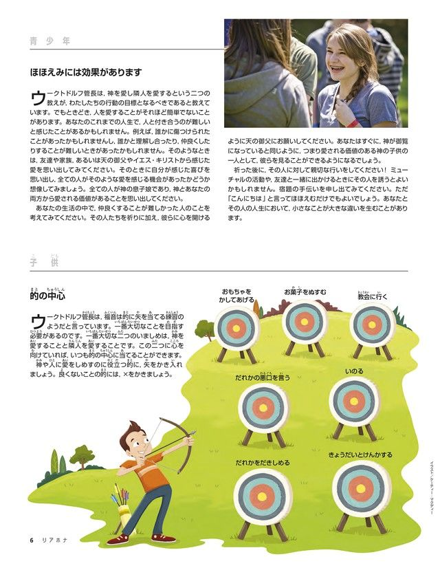

| 2017年1月号リアホナ | |
| 末日聖徒イエス・キリスト教会 | |
| (2019) | |
目次
ゴードン・B・ヒンクレ ー ---楽観的でビジョンを持った預言者
誰かに悪いことをするよりも，誰かを赦さないことの方が大きな罪であるのは，なぜでしょうか
うつ病について教会はどのように考えており，またわたしはうつ病にどう対処すべきでしょうか
家庭の夕べのためのアイデア
今月号には，家庭の夕べで活用できる記事や活動が載っています。以下に二つの例を挙げます。
「救い主についての証に雄々しく」28ペー ジ ---ゴールデン長老は，人生において困難でありながら重要な瞬間にどのように向き合えばよいかを述べています。家族が難しい決断を迫られる幾つかの状況についてロールプレーイングを行うとよいでしょう。例えば，宿題の答えを写させてほしいというクラスメートの頼みを断る，あるいは汚い言葉を使わないよう友達に頼むといった練習ができます。そのような状況が生じる前に強い証を育むことがどのような備えになるか，話し合います。
「天のお父様はわたしのいのりに必ずこたえてくださいますか」69ペー ジ ---祈りがどのような形でこたえられるのを目にしたことがありますか。主が祈りにこたえてくださった特定の経験について話すとよいでしょう。期待どおりにこたえられた経験でも，予期せぬ形でこたえられた経験でもかまいません。主が自分の祈りにこたえ，祝福してくださった具体的な方法について日記に記録するよう，励まし合うことを検討しましょう。
大管長会メッセージ
中心に狙いを定める
ディーター・F・ウークトドルフ管長
大管長会第二顧問

写真©セルグ・ミシュコフスキー/Getty Images
最近，わたしはアーチェリーを練習している人たちを観察しました。見ているだけで，弓矢を本当にマスターしたいなら時間と練習が必要であることがはっきり分かりました。
的が描かれていない壁に向かって矢を放ち，後からその矢の周りに的を描いても，熟達した射手として名声を博することはできないでしょう。的を見つけ，その中心を射る技術を習得しなければならないのです。
的を描く
最初に矢を放ち，その後に的を描くなど，少しばかげているように思えるかもしれませんが，ときどきわたしたちは生活の他の状況でそれとまったく同じような行動を取ることがあります。
わたしたち教会員はときどき，福音のプログラムや問題，さらに教義についても，自分にとって興味深い，重要である，あるいは面白いと思うものに愛着を持つ傾向があります。それらの周りに的を描く誘惑に駆られ，自分が福音の中心に狙いを定めていると信じ込んでしまうのです。
これはありがちなことです。
遠い昔から，わたしたちは神の預言者からすばらしい勧告を与えられ，霊を鼓舞されてきました。さらに，教会のさまざまな出版物，手引き，マニュアルから指示と説明を受けています。ですから，わたしたちは簡単に自分の好みに合った福音のテーマを選び，その周りに的を描いて，福音の中心を見つけたと主張してしまうのです。
救い主は明らかにしておられる
これは，わたしたちの時代に限った問題ではありません。古代において，宗教指導者たちは多大な時間を費やして戒めのリストを作り，順位を付け，数百の戒めの中でどれが一番大切か議論しました。
ある日，宗教学者のあるグループが，救い主をその議論に引き込もうとしました。彼らは，ほとんどの学者が同意することのできない争点について意見を述べるよう救い主に求めたのです。
「先生，律法の中で，どのいましめがいちばん大切なのですか」と。
わたしたちは皆，イエスがどう答えられたかを知っています。「『心をつくし，精神をつくし，思いをつくして，主なるあなたの神を愛せよ。』
これがいちばん大切な，第一のいましめである。
第二もこれと同様である，『自分を愛するようにあなたの隣り人を愛せよ。』
これらの二つのいましめに，律法全体と預言者とが，かかっている。」
「これらの二つのいましめに，律法全体と預言者とが，かかっている」という最後の言葉に注目してください。
救い主は的を示されただけでなく，その中心が何であるかも明らかにしておられるのです。
的を射る
わたしたちは教会員として，イエス・キリストの御名を受けると聖約します。その聖約の中に暗に示され理解されているのは，わたしたちが心を尽くして神について学び，神を愛し，神に対する信仰を増し，神を褒めたたえ，神が示された道を歩み，神の証人として堅く立つよう努力するということです。
神について学び，神の愛を強く感じれば感じるほど，イエス・キリストの無限の犠牲が神の神聖な賜物であることをさらによく理解するようになります。 そして神の愛は，赦しの奇跡に通じる真の悔い改めの道を歩むように霊感を与えてくれます。この過程を通じて，わたしたちは周りにいる人々に対してさらに大きな愛と哀れみを抱くことができるようになります。人に貼られたレッテルに左右されることなく人を見るようになります。人の罪，短所，弱点，政治的傾向，宗教的な信念，国籍，肌の色によって人を非難したり，裁いたりする誘惑に抵抗するようになります。
わたしたちが出会うあらゆる人を天の御父の子供，すなわちわたしたちの兄弟姉妹として見るようになります。
とりわけ愛することが容易でない人々に対してさえも，理解と愛をもって手を差し伸べるようになり，悲しむ人とともに悲しみ，慰めが必要な人を慰めるようになります。
そして正しい福音の的は何だろうかと思い煩う必要がないことを悟るのです。
二つの大いなる戒めこそがその的であり，これらの二つの戒めに，律法全体と預言者とがかかっているのです。このことを受け入れるとき，他の全ての良い事柄は正しい場所に収まります。
自分の関心や思いや努力の中心が，全能の神に対する愛を増し加えることと他の人々に心を向けることにあるなら，わたしたちは自分が正しい的を見つけて，イエス・キリストの真の弟子となるという，的の中心に狙いを定めていることが分かるのです。
このメッセージから教える
このメッセージを分かち合う前に，「われ主を愛して」（『賛美歌』134番）を歌うとよいかもしれません。その後，あなたの訪問先の人たちに，自分の生活の中の「的」について考えるよう勧めてもよいでしょう。「神を愛し」そして「自分を愛するようにあなたの隣り人を愛する」という二つの大いなる戒めを，常に行動の指針とするためにはどうしたらよいか，話し合ってもらいます（マタイ22：37，39参照）。自分がキリストに焦点を当てた生活をするようにした具体的な方法を分かち合い，どのように祝福を受けたかについて証を述べてもよいでしょう。
ほほえみには効果があります
的の中心
青少年
ほほえみには効果があります
ウークトドルフ管長は，神を愛し隣人を愛するという二つの教えが，わたしたちの行動の目標となるべきであると教えています。でもときどき，人を愛することがそれほど簡単でないことがあります。あなたのこれまでの人生で，人と付き合うのが難しいと感じたことがあるかもしれません。例えば，誰かに傷つけられたことがあったかもしれませんし，誰かと理解し合ったり，仲良くしたりすることが難しいときがあったかもしれません。そのようなときは，友達や家族，あるいは天の御父やイエス・キリストから感じた愛を思い出してみてください。そのときに自分が感じた喜びを思い出し，全ての人がそのような愛を感じる機会があったかどうか想像してみましょう。全ての人が神の息子娘であり，神とあなたの両方から愛される価値があることを思い出してください。
あなたの生活の中で，仲良くすることが難しかった人のことを考えてみてください。その人たちを祈りに加え，彼らに心を開けるように天の御父にお願いしてください。あなたはすぐに，神が御覧になっていると同じように，つまり愛される価値のある神の子供の一人として，彼らを見ることができるようになるでしょう。
祈った後に，その人に対して親切な行いをしてください！ミューチャルの活動や，友達と一緒に出かけるときにその人を誘うとよいかもしれません。宿題の手伝いを申し出てみてください。ただ「こんにちは」と言ってほほえむだけでもよいでしょう。あなたとその人の人生において，小さなことが大きな違いを生むことがあります。
子供
的の中心

イラスト／ケーティー・マクディー
ウークトドルフ管長は，福音は的に矢を当てる練習のようだと言います。一番大切なことを目指す必要があるのです。一番大切な二つのいましめは，神を愛することと隣人を愛することです。この二つに心を向けていれば，いつも的の中心に当てることができます。
神や人に愛をしめすのに役立つ的に，矢をかき入れましょう。良くないことの的には，×をかきましょう。
おもちゃをかしてあげる
お菓子をぬすむ
教会に行く
だれかの悪口を言う
いのる
だれかをだきしめる
きょうだいとけんかする
家庭訪問メッセージ
扶助協会の目的
よく祈りながらこの資料を学び，何を伝えるべきか分かるよう願い求めてください。扶助協会の目的を理解することで，神の娘たちはどのように永遠の命の祝福に備えられるでしょうか。
扶助協会の目的は「永遠の命の祝福に女性を備えること」であると，中央扶助協会会長のリンダ・K・バートン姉妹は述べています。「業においてわたしたちが担う重要な役割」に，信仰と家族と扶助を通して，わたしたちは携わります。
扶助協会の業は「物質的業であり，霊的な業です」と中央扶助協会会長会第一顧問のキャロル・M・スティーブンズ姉妹は言います。「それは女性が救い主の時代に行ったことであり，わたしたちが継続して行っていることでもあります。」
井戸の傍らにいたサマリヤの女を思い起こしてください。彼女は水がめをそこに置いたまま走って行って，イエスが預言者であられると人々に告げました。（ヨハネ4：6－42参照）あるいは，生涯を通じて喜んで人々に仕えたフィベはどうでしょうか。（ローマ16：1－2参照）彼女たちは，救い主の時代にあってキリストのもとに来るということに積極的だった女性の例です。その主は，わたしたちのために永遠の命を得る道を開いてくださったのです（ヨハネ3：16参照）。
1842年，自分たち自身の組織を作ろうとイリノイ州ノーブーでサラ・キンボール宅に集まった開拓者の姉妹たちを思い起こすとき，神は扶助協会を神権と協調した組織として誕生させるよう計画しておられたことが分かります。エライザ・R・スノーが組織の規約を起草し，預言者ジョセフ・スミスがそれに目を通しました。預言者は，女性たちが組織されて初めて，教会が完全に組織されることを悟りました。ジョセフは，彼女たちのささげ物は主に受け入れられているけれども，主はさらに良いものを備えておられると言って，次のように語りました。「わたしは女性たちを神権の下に，神権の規範に倣って組織します。」
「扶助協会は世の中で何か善いことをしようとする女性グループの一つではありません。それとは別のものでした。神権の権能の下で組織されていましたから，『さらに良い』ものでした。それは地上で神の業を展開するために必要な一段階でした。」
その他の聖句と資料
教義と聖約25：2－3，10；88：73；www.lds.org/callings/relief-society?lang=jpn
信仰・家族・扶助
考えてみましょう
女性が天の御父の求めておられる神聖な役割を果たせるよう，扶助協会はどのように女性たちを助けることができるでしょうか。また，どのように女性たちを永遠の命へと導くことができるのでしょうか。
2016年10月の大会ノート
「主なるわたしが語ったことは，わたしが語ったのであ〔る。〕......わたし自身の声によろうと，わたしの僕たちの声によろうと，それは同じである。」（教義と聖約1：38）
2016年10月の総大会を振り返る際に，このページ（および今後の大会ノート）を使って，生ける預言者と使徒，他の教会指導者が語った最近の教えを学び，生活に取り入れることができます。
主に従いましょう
安息日に礼拝するとき，わたしたちがキリストのような特質を伸ばし，救い主を覚えるよう何人かの話者が励ましました。彼らが話したことを読むには，2016年11月号を用いるか，conference.lds.orgをご覧ください。
- どのようにクリスチャンの愛と奉仕を実践することができるでしょうか 。 ---ロバート・D・ヘイルズ「クリスチャンの愛と奉仕を実践することにより『わたしに従ってきなさい』」22参照
- どうしたらさらに良いホームティーチャーになれるでしょうか 。 ---ジェフリー・R・ホランド「教会の使者」61参照
- 安息日に誠心誠意，心からの礼拝を育むにはどうしたらよいでしょうか 。 ---ディーン・M・デイビーズ「礼拝がもたらす祝福」93参照
- どうしたら聖餐を受けることをより有意義なものにできるでしょうか 。 ---ピーター・F・マーズ「聖 餐 ---聖くなる助け」85参照
「キリストや主の教義に反するものはすべて，わたしたちの喜びを妨げます。」
十二使徒定員会 ラッセル・M・ネルソン会長「喜びー霊的に生き抜く道」『リアホナ』2016年11月号，84
救いの計画
悔い改めは神がわたしたちに下さった賜物
キリストの無限の贖罪
預言者の約束
救いの計画
トーマス・S・モンソン大管長「幸福への完全な道」『リアホナ』2016年11月号，80－81
「その〔救いの〕計画に不可欠な存在が，救い主イエス・キリストです。主の贖いの犠牲がなければ，すべての人は失われます。しかし，主とその使命を信じるだけでは不十分です。わたしたちは行動して学び，探して祈り，悔い改めて成長する必要があります。神の律法を知り，それに従って生活する必要があります。救いの儀式を受ける必要があります。それこそが，真の永遠にわたる幸福にあずかる唯一の道なのです。
「わたしたちは恵まれて，その真理を手にしています。わたしたちには，真理を分かち合う義務があります。御父が持っておられるすべてにあずかることができるよう，真理に従って生活しようではありませんか。御父は，わたしたちのためになることでなければ何事も行われません。主は言われました。『人の不死不滅と永遠の命をもたらすこと，これがわたしの業であり，わたしの栄光である。』〔モーセ1：39〕
わたしは心の底から，謙遜の限りを尽くして，わたしたちのために備えられた御父の計画という偉大な賜物について証します。それはこの世と来るべき世において，平安と幸福へと通じる唯一の完全な道なのです。」
教義的な重要点
悔い改めは神がわたしたちに下さった賜物
十二使徒定員会 D・トッド・クリストファーソン長老「わたしの愛のうちにいなさい」『リアホナ』2016年11月号，48
「今日，よく耳にするのが，神の愛は『無条件』という言葉です。ある点でこれは真実ですが，「無条件」という言葉は聖文のどこにも見られません。......
神はいつもわたしたちを愛しておられますが，わたしたちを罪のあるままに救うことはおできになりません。アミュレクがゼーズロムに語った言葉を思い出してください。救い主は主の民を罪のあるまま救うのではなく，彼らを罪から救われるのです。罪のある者は清くない者であり，『清くない者は決して天の王国を受け継ぐことができない』〔アルマ11：37〕，すなわち神のみもとに住むことができないからです。......
モルモン書から，キリストの苦しみの目的，その究極的な愛の現れの何たるかが分かります。それは『憐れみの心を成し遂げることであり，この憐れみは正義に打ち勝ち，また人々が悔い改めを生じる信仰を持てるようにするその道を設けるのである。』〔アルマ34：15〕
ですから，悔い改めは，主が実に高価な代償を払ってわたしたちに下さった賜物なのです。」
キリストの無限の贖罪
中央扶助協会会長会第一顧問 キャロル・M・スティーブンズ「癒し手であられる主」『リアホナ』2016年11月号，10，11，12
「救い主，癒し手であられる主は，わたしたちの心を変え，罪のために生じる悲しみからわたしたちを永久に解放する力をお持ちです。......
......主は，人々の不義な行いのために痛みを経験するわたしたちを慰め，強めてくださいます。......
......主は，わたしたちが苦痛を伴う『死すべき世の現実』，すなわち災害，精神疾患，病気，慢性痛，死などを経験するとき，わたしたちを慰め支えてくださいます。......
救い主はこう〔述べ〕ておられます。
『......あなたがたは，わたしのもとに来るならば永遠の命を得るであろう。見よ，わたしの憐れみの腕はあなたがたに向けて伸べられている。わたしは来る者をだれでも受け入れよう。』〔3ニーファイ9：14〕」
わたしたちが信じていること
教会が地に満ちると信じている
1830年にアメリカ合衆国ニューヨーク州の小さな町で教会が設立されたとき，教会の会員はたったの6人しかいませんでした。その後教会は，世界の150か国以上にワードや支部を置き，1,550万人を超える会員を擁するまでに発展しています。この発展は，教会が全地に満ちるまで転がり進むという旧約聖書の預言を成就するものです（ダニエル2：31－45参照）。教会，すなわち地上における神の王国は，「人手によらずに山から切り出され〔た〕」石と述べられ（ダニエル2：45），それが人の造るものではなく神により設けられるものであることが明らかにされています。
教会の影響力が地に満ちても，その会員数は依然として比較的少ないことでしょう。ニーファイはこのことを予見し，「神の小羊の教会が見えたが」人々の悪事のために「この教会に属している者の数は......少なかった」と，わたしたちの時代について記しました（1ニーファイ14：12）。イエス・キリストの再臨の時が近づくにつれて，世界はますます邪悪になり，「末日聖徒であることは，人々の支持を得られなくな〔ります。〕」
しかしニーファイは，「神の聖徒である小羊の教会の人々もまた，地の全面にいる」ことを予見しました（1ニーファイ14：12）。ワードや支部は全世界にあり，総大会の話は90を超える言語に通訳され，およそ7万5,000人の専任宣教師が418の伝道部で福音を分かち合っています。また福音は，Mormon.orgやLDS.orgなどのソーシャルメディアやウェブサイトを通じても全世界に伝えられています。
こうした活動は大きな影響力を持ち広範囲にわたっていますが，多くは静かに進んでいます。「この主の業は実に大いなる驚くべき業でありながら，人類の政治，文化，学術に関する指導者にほとんど気づかれることなく前進しています。一人ずつ，あるいは一家族ずつ，人々の心に静かにそっと働きかけ，その神聖なメッセージによって各地の人々に祝福をもたらしています。」
はるか昔に預言された石が本当に転がり進んでおり，わたしたちが自らの役割を果たすのに伴い，福音は今後も広がり続けて全地に満ちることでしょう（ダニエル2：31－45参照）。
教会の将来についてさらに詳しく知りたい方は，教義と聖約第65章と，ゴードン・B・ヒンクレー「山から切り出された石」（2007年10月総大会）と，L・ホイットニー・クレートン「その時が来る」（2011年10月総大会）をお読みください。
福音が広く伝わるようにするためにわたしたちができること
戒めを守り，自分の証を強めることにより，福音を広めるのに助けとなる基盤が築かれます。
自分の家族に福音を教えることにより，彼らに異なったことを教える世の中にあっても信仰をもって生活できるように強さを与えることができます。
自分の召しを果たすことにより，地元の教会を強めることができます。
福音について人々に話すだけで，福音を広めることができます。
この世で福音を聞くことなく亡くなった人たちのために，神殿で儀式を行うことができます。

教会の将来
「今夜ここで皆さんが見ているのは，僅か一握りの神権者だけですが，この教会は南北アメリカを満たし，世界を満たすでしょう。」
預言者ジョセフ・スミス（1805－1844年），1834年の神権会における話。『歴代大管長の教 え ---ジョセフ・スミス』，137で引用
わたしたちの家庭，わたしたちの家族
永遠にみんなと一緒に住みたい
レオンギナ・アダメス・デ・ウブリ
著者はドミニカ共和国サントドミンゴに住んでいます。
6歳の娘の信仰が，わたしに信仰を取り戻させてくれました。
わたしが22歳のときに，わたしの人生は思わぬ方向に向かいました。母が亡くなったのです。わたしの両親はとても信仰の深い人で，福音の中でわたしを育ててくれました。母が亡くなった後，父は国を出てアメリカ合衆国に移り住みました。時がたつにつれて，一人っ子だったわたしはひどく寂しさを感じるようになりました。母はもうこの世にはおらず，父は遠く離れて暮らしていて，わたしが父と会えたのは1年のうちたった3週間だけでした。
そうした気持ちから，わたしはだんだん，大学時代やわたしが働いていた会社の「友人たち」のもとへ逃げ込むようになりました。少しずつ現世のことに見せかけの幸せを見つけるようになりました。わたしは教会へ行くのをやめ，やがてすっかり教会から離れてしまいました。その後，わたしはすてきな青年と結婚しました。彼はとてもすばらしい考えを持っていましたが，福音のことは知りませんでした。わたしたちには，レア，イサク，イスマエルという3人の子供が生まれました。
イラスト／ケリー・マックモリス
ある年の10月に，わたしの父が生まれたばかりの赤ちゃんを見にやって来ました。父がいる間に，6歳のレアが，どうしておばあちゃんを連れて来ないのかと聞きました。すると父はレアに，おばあちゃんは天のお父様のそばのとても特別な場所にいると話しました。父が帰るとすぐに，レアが強い口調でわたしに言いました。「ママ，わたしはおばあちゃんに会いたい。おばあちゃんが天にいるのは知っているけど，わたしもいつかみんなで一緒にそこに住みたいの。おばあちゃんとおじいちゃん，パパ，イサク，イスマエル，それにママと一緒に。わたしはずっとみんなと一緒に住みたいの。前にいた所に帰って，今と同じ家族で住みたいの。そうすればおばあちゃんと遊べるわ。」
わたしは何と言ったらよいか分かりませんでした。わたしは彼女の美しい無邪気な顔にそっと手を触れ，それから自分の部屋へ行きました。わたしはひざまずき，涙がかれるまで泣き通しました。わたしは天のお父様に赦しを求めました。自分が永遠の家族として一緒に住むために歩むべき道から外れていることは分かっていました。わたしは，子供たちを正しい道に導く責任を果たしておらず，また夫にも福音について話していませんでした。
立ち上がれるようになると，わたしは教会の指導者に連絡を取りました。すると指導者は，ワードの長老たちに会えるようにしてくれました。次の日の夜，長老たちがやって来て，夫に教えを伝えてくれました。その夜から，わたしたちの生活は永遠に変わりました。今わたしたちは，毎週日曜日に家族全員で教会へ行っています。わたしは今，あまり活発でない姉妹たちを助けることのできる召しを受けています。またわたしたちは，神殿に参入する準備をしています。
神の御霊は，時として思いも寄らない人々を通じてわたしたちを導いてくださいます。今回は，わたしの6歳の娘を通じてそれをしてくださいました。今わたしは，神殿で結び固めを受けることにより自分が永遠に家族と一緒に住めることを知っています。
天でつながれる
「救い主は死すべき世で務めを果たしておられたとき，使徒の頭であるペテロに告げた言葉の中で，家族を結び固める力について次のように言われました。『......あなたが地上でつなぐことは，天でもつながれ，あなたが地上で解くことは天でも解かれるであろう。』（マタイ16：19）
日の栄えの王国においてのみ，わたしたちは永遠に家族として住むことができるのです。天の御父と救い主の前で家族としてそこに住むことができるのです。」
大管長会第一顧問 ヘンリー・B・アイリング管長「家族は永遠に」『リアホナ』2015年6月号，4
救い主の方法で教える
話し合いに導く質問を吟味する
テッド・バーンズ
教会神権・家族部
一番大切な質問は，教師がクラスに着く前に自分に問いかける質問かもしれません。
イラスト／オーガスト・ザンボナト
座って昼食を食べながら，一緒に見た映画について友達と話しているとします。すると，友達の一人がこう言います。「あの映画の中で一番大切な場面がどこだったか言える人はいるかな。」
この質問に少し面食らいながらも，あなたは少し考え，最後の場面がおそらく一番大切だったのではないかと言います。「いい意見だねえ」と友達は言います。「でも，ぼくの考えとは違うんだなあ。誰か他に意見は？まだ何も言っていない人の意見を聞きたいな。」
友達同士では不自然な言い方かもしれませんが，なぜか，これは日曜日のクラスでよくあることのように思えます。教師としてわたしたちは，福音の真理について自然な形で気楽に話すのではなく，ほかの状況では変に感じたり会話が止まったりするようなことを言ってしまうことがあります。わたしたちはクラスの生徒たちに，彼らが友達の中にいると感じてもらいたいと思いますし，学んでいる原則に対する考えを遠慮なく言い合えるようになってほしいと思っています。そのように伝え合うと御霊を招き入れ，クラス全員が豊かな経験をすることができます。
もっと自然で有意義な話し合いに導くような質問が必ずできるようにするには，どうしたらよいのでしょうか。すべきこととしてはいけないことを幾つか紹介しましょう。これは，多くの教師が，役に立つと言っていま す ---答えが明白な質問はしない。答えが一つではない質問をする。あまりに個人的な質問はしない。
クラスでどのような質問をするかを計画する際にまず，次のように自分に問いかけることも大切かもしれませ ん ---そもそも，自分はなぜこの質問をするのか。
なぜ質問するのか
質問の裏にある動機によって，大きな違いが出ます。例えば，言いたいことがあるけれどもクラスの生徒に代わりにそれを言ってほしいために質問をすることはありませんか。確かに，わたしたち教師は全部を話したくはありませんが，強調したい点があるので，期待している答えを生徒に言わせるような質問をすることがあります。そのような心積もりがあると，実際には主張になっているような質問をしてしまいかねません。こんな質問です。「ポルノグラフィーを避けると思いを清く保てるのはなぜですか。」「毎日祈るのは大切ですか。」
特定の答えを引き出すことを意図した質問をするのがまさにふさわしい状況もあります。そのような質問をすると強調点が明確になり，教師はレッスンを先に進めやすくなります。しかし，このような質問から有意義な話し合いが始まることはあまりありません。
これに対して，教師が自分のクラスの生徒の思いや心，生活を本当に知りたくて質問した場合は，その気持ちが質問にも表れます。
クラスの生徒たちが本音で話せるようになる質問で，霊的な学びを促すものには，次のような質問があります。「この節を読んで，どんな点が心に残りましたか。」「あなたはどんな経験から，主の約束を信頼することを学びましたか。」「......についてどう思いますか。」
次に挙げるような質問の例について考えてみましょ う ---
- 御霊はニーファイに，「何を望むか」と尋ねた。（1ニーファイ11：10）
- 救い主は弟子たちに，こう尋ねられた。「あなたがたはわたしをだれと言うか。」（マタイ16：15）
- そして，マルタにこう言われた。「わたしはよみがえりであり，命である。......あなたはこれを信じるか。」（ヨハネ11：25，26）
これらの質問を受けた人は，心の内にあることを話したくなりました。そしてどの場合も，質問に答えた人は，それに続いて強烈な霊的経験をしています。
質問は愛の表現
信じられないかもしれませんが，話し合いを促す質問は，ほとんど誰にでもできます。自分のことを良い教師だと思っていない人でもできるのです。友達や家族と有意義な会話をしているときや，昼食を取りながら好きな映画についておしゃべりしているだけのときには必ず，そのような質問を自然にしているものです。問題は，黒板を背にし，期待を抱いている生徒の前に立つと，自然に思い浮かぶような質問が突然，出てこなくなることなのです。
ですから，話し合いを促す良い質問をするためのこつは，一つには次のように自問することです。「教室以外の場面，例えば家で腰かけて何人かの友達と福音について話しているとしたら，どんなふうに質問するだろうか。意見や感じていることを，どうやって話してもらえるだろうか。」教えることは友達との気軽な雑談とまったく同じというわけではありませんが，一つ共通点があります。それは，心からの関心と偽りのない愛がその陰にあるということです。
したがって，もしクラスで尋ねる上手な表現の質問を作る技術があなたにまだないとしても，心配することはありません。生徒を愛することしかできなかったとしても，御霊が導いてくれますから，何を言うべきかはだんだんと分かるようになります。「愛はいつまでも絶えることがない」とパウロは宣言しています（1コリント13：8）。そしてこれは，クラスで教師が質問をするという簡単なことにさえ当てはまるのです。
『救い主の方法で教える』31－32（teaching.lds.orgでご覧いただけます）の「霊感された質問をする」に出ている6種類の質問について学ぶとよいでしょう。
教義と聖約から学ぶ御父と御子に関する洞察
ノーマン・W・ガードナー
セミナリー・インスティテュート
この啓示の書は，神会に関する失われた真理や，救い主や天の御父とともに再び暮らせるようになる方法を明らかにしています。
「最初の示現」ウォルター・レーン画
福音が回復されたことにより，神会の特質とその目的に関する非常に多くの知識が世の人々に与えられました。この知識があるおかげで，この御三方を信じるわたしたちの信仰が育まれ，その戒めを守ろうとする意欲が高まっています。
具体的に言うと，教義と聖約がイエス・キリストについて学ぶのに役立つのは，それが「イエス・キリストの神性，尊厳，完全，愛，贖いの力」に関する力強い真理を教えているからです（教義と聖約の序文）。現代の啓示が記されたこの書物には，「わたしに学び，わたしの言葉を聴きなさい」という主の勧めが記されています（教義と聖約19：23）。この書物を読むと主に対する理解が深まり，主と自分はどのような関係にあるのか，主は自分を贖うために何をしてくださったのか，自分に何を望んでおられるのかがさらに深く理解できるようになります。
教義と聖約の中で，わたしたちはイエス・キリストの声を聞くことができる
ジョセフ・スミスは救い主から多くの啓示を受けた。
「啓示を受けるジョセフ・スミス」ダニエル・A・ルイス画
教義と聖約は古代の聖典ではありません。ジョセフ・スミスと，現代におけるその後継者に与えられた啓示が記載されているのです。イエス・キリストが御父の代わりに語られる神聖な声が聞こえてきます。教義と聖約には，主イエス・キリストが一人称で語られる声が，新約聖書やモルモン書，高価な真珠を全て合わせたよりも多く含まれています。
教義と聖約18：33－35「わたし，すなわち，あなたがたの主でありあなたがたの神である，イエス・キリストがこれを語った。これらの言葉は人々から......出ているのではなく，わたしから出ているのである。......これらの言葉をあなたがたに語っているのは，わたしの声である。」
教義と聖約には，神にまみえた人々の話が記載されている
ジョセフ・スミスとオリバー・カウドリは，カートランド神殿でイエス・キリストにまみえた。
「カートランド神殿に御姿を現される主」デル・パーソン画
1820年に最初の示現を受けて，少年ジョセフ・スミスは，御父と御子が実在の御方であられることをその目で見て知りました。教義と聖約にはその他にも，預言者ジョセフやその他の人々が示現や個人的な現れによって御父と御子にまみえた例が記録されています。このような記述は，御父と御子が生きておられ，福音の回復を指示されたことを現代のわたしたちに証するものとなっているのです。
教義と聖約76：19－23 1832年2月の示現で，御父と御子が御姿を現される。
教義と聖約137：1－3 1836年1月の示現で，御父と御子が御姿を現される。
教義と聖約110：2－4 偉大なるエホバ，イエス・キリストが，1836年4月に御姿を現される。
教義と聖約は，父なる神について学ぶ助けとなる
ステパノは石で打ち殺されながら，御父と御子とを見た。
「人の子が神の右に立っておいでになるのが見える」の一部。ウォルター・レーン画
預言者ジョセフ・スミスは次のように教えています。「神の性質を理解し，神のもとに行く方法を知るとき，神はわたしたちに天の事柄を明らかにし......てくださいます。わたしたちが神のもとに行く用意ができたとき，神はいつでもわたしたちのもとに来てくださるのです。」教義と聖約は天の御父の特質や属性，目的について教えており，わたしたちが御父にさらに近づく助けになります。
教義と聖約20：12，17－18 父なる神は無限であり，変わられることがない。
教義と聖約76：20，23 御父と御子は独立した別個の存在であられる。
教義と聖約93：3－5 御父と御子は一つであられる。
教義と聖約130：22 御父と御子は，触れることのできる骨肉の体を持っておられる。
教義と聖約138：3－4 天の御父は御自分の子供たちを愛しておられるので，人類を救うために御子を送られた。
教義と聖約は，イエス・キリストについて学ぶ助けとなる
エホバ（イエス・キリスト）は，顔と顔を合わせてモーセと語られた。
「エホバにまみえるモーセ」の一部。ジョセフ・ブリッキー画
イエス・キリストは，天の御父の全ての霊の子供たちの長子であられました。イエスは前世で全ての知識と力を得られ，世界の創造主として，御父を代表しておられました。主イエス・キリストは，御自身の内にある神の力により，御自身が造られた全てのものにとって光と命の源であられます。教義と聖約は，御父の計画における主の役割の多くを明らかにしています。
教義と聖約93：21 イエス・キリストは，神の全ての霊の子供たちの長子であられた。
教義と聖約38：1－3 イエス・キリストは，世界が造られる前に，全ての知識と力を得られた。
教義と聖約76：24 イエス・キリストは，世界の創造主として，御父を代表しておられた。
教義と聖約88：6－13 イエス・キリストは，御自身が造られた全てのものにとって光と命の源であられる。
教義と聖約45：11；136：21，22 イエス・キリストは，旧約聖書の偉大なるエホバであられる。
教義と聖約43：34イエス・キリストは世の救い主であられる。
教義と聖約18：11－13；20：21－25 イエス・キリストは，苦しみ，十字架につけられ，再びよみがえられた。
教義と聖約29：10－12 イエス・キリストは，力と栄光をまとって再び地上に来ると約束された。
教義と聖約は，御父と御子がわたしたちに何を望んでおられるかを知る助けとなる
わたしたちは現代の啓示を通して，さらに御父と御子のような者になる方法を学ぶことができる。
教義と聖約は，永遠の命とは何か，御父と御子のもとに戻ってともに住み，御父の持てるものを全て受けて，御二方のような者になるにはどうしたらよいかを，他のどの聖典よりも分かりやすく説明しています。また，イエス・キリストが贖罪を通してどのようにしてこれを可能にするのか，イエスの定められた条件を満たすためにわたしたちは何をする必要があるのかを教えてくれます。それに加えて，わたしたちは，イエス・キリストの模範に従うとはどういうことかを教義と聖約で学びます。というのは，わたしたちと同じように，イエス・キリストも最初から完全を受けたのではなく，恵みに恵みを加えられてついに全ての力と栄光を持つようになられたからです。
教義と聖約1：32；19：16－19；58：42－43；95：1－2 救い主は悔い改める者をお赦しになる。
教義と聖約20：37，41，72－74。33：11 も参照。神会の御三方は，信じる者にバプテスマと聖霊を受けるよう勧めておられる。
教義と聖約84：19－21 メルキゼデク神権の儀式を通して，神性の力が現れる。
教義と聖約93：12－14，16－17 イエス・キリストは恵みに恵みを加えられてついに完全を受けられた。
教義と聖約20：30－31 救い主は御自分を愛し，御自分に仕える者に恵みを与えられる。
教義と聖約35：2；50：40－43 わたしたちは，御父と御子と一つになることができる。
教義と聖約93：19－20 わたしたちは御父の栄光と完全を受けることができる。
教義と聖約は，霊的な知識を得るためのパターンを教えている
研究と祈りによって，霊的な知識の扉を開くことができる。
教義と聖約は御父と御子について教え，証するだけでなく，聖霊の助けによって神会の御三方に関する霊的な知識を得るためのパターンも与えています。それは，主の言葉を研究し，理解力を天の御父に求め，主の戒めを守ることによってイエス・キリストを信じる信仰を働かせるというパターンです。
光と真理は，主の全ての言葉に従って生きる人々に約束されています。神会の特質とその目的について詳しく学ぶのは大切なことです。この知識があると，霊的な事柄を理解し真理を確信することを熱心に求めるようになります。この知識があると，天の御父とイエス・キリストがわたしたちを個人的に御存じで，わたしたちを愛し，わたしたちに永遠の命を与えようとしておられることが確信できるようになるのです。
教義と聖約6：5；76：5－10，114－118 天の御父はわたしたちが知識を求めることを望んでおり，それを与えると約束しておられる。
教義と聖約84：43－48 わたしたちが御父の言葉を熱心に心に留めるなら，御父はわたしたちを教えてくださる。
教義と聖約88：118 研究によって，また信仰によって学問を求めなさい。
結論
ジョセフ・スミスは，御父と御子の特質と目的を明らかにした。
「教えを説くジョセフ・スミス」の一部。サム・ラウロー画
教義と聖約は，天の御父とその独り子イエス・キリストに近づくための助けになります。それはこの書物が御二方の特質と目的を明らかにしているからです。預言者ジョセフ・スミスは，神を信じて神に頼らなければならない理由を次のように簡潔に述べています。「わたしたちの神の目的は大いなるものであり，その愛は果てしなく，その知恵は無限であり，その力には限界がありません。ですから聖徒たちには，喜び，うれしく思うべき理由があるのです。『これこそ神であり，世々かぎりなくわれらの神であって，とこしえにわれらを導かれる』ことを知っているのですから（詩篇48：14）。」
ゴードン・B・ヒンクレ ー ---楽観的でビジョンを持った預言者
アンドリュー・D・オルセン
教会パブリッシングサービス部
今年は神権会と扶助協会で『歴代大管長の教 え ---ゴードン・B・ヒンクレー』を学習し，限りなく楽観的で，愛情深く，先見の明を持っていた預言者から学びます。
ゴードン・B・ヒンクレーは，ブライアント・ストリンガム・ヒンクレーとエイダ・ビトナー・ヒンクレーの子供として，1910年6月23日に生まれました。そして，1937年4月29日にマージョリー・ペイとソルトレーク神殿で結婚し，5人の子供の親となりました。また，1995年3月12日から2008年1月27日まで第15代大管長を務めました。
「毎年春にいくらかの木を植えなければならない」と，ゴードン・B・ヒンクレー大管長は82歳のときに日記に書いています。「少なくとも過去50年間そうしてきたと思う。......木にはすばらしい特質がある。最初は非常に小さいが，季節を経るにつれて生長する。暑い夏の日差しを遮ってくれる日陰をつくる。また，おいしい実を結ぶ。光合成というすばらしい働きを続ける。......木は全能者のすばらしい創造物の一つだ。」
ヒンクレー大管長は90代になっても木を植え続けました。多くの点で，木を植えることを愛する彼の思いは，使徒として，また大管長としての働きの中に反映されました。木を植えたことは楽観主義の一つの現れでした。楽観主義は，彼の教えや他の人々との交流に見られる一つの特質でした。彼は木を1本ずつ育て，同様に人を一人ずつ育てました。また，はるか先の将来に目を向け，木がどうなるかを思い描き，同様に，一人一人の永遠の可能性と神の業の壮大な将来を思い描きました。
「楽観的に生きるべき理由は十分にあります」
「わたしは楽天家です。」ヒンクレー大管長はよくこう述べました。「皆さんにお願いします。嵐を探し求めることをやめ，もっと太陽の光を楽しんでください。」彼の楽観主義は，前向きの考え方を持つように努めたとはいえ，それよりはるかに強いものとなりました。彼の楽観主義の最大の 源 ---その力の源となったも の ---は，神を信じる信仰と，神の子供たちに幸福と救いをもたらす神の計画に対する証でした。
ヒンクレー大管長の楽観主義を表すものの一つが，「万事うまくいきます」という彼の強い信念でした。十二使徒定員会のジェフリー・R・ホランド長老は言っています。これが「ヒンクレー大管長が家族や友人，同僚たちに確信を持って繰り返し語る言葉です。そして，こう言うのです。『努力を続けましょう。信じましょう。幸せでいましょう。失望しないでください。万事うまくいきます。』」
しかし，このメッセージは他の人のためになっただけではありません。「わたしは毎朝そう自分に言い聞かせます」と，ヒンクレー大管長は会衆に語りました。「最善を尽くすなら，万事うまくいきます。神に信頼を置き，将来に対する信仰と確信をもって前進してください。主はわたしたちをお見捨てになりません。」
ヒンクレー大管長は，自らの楽観主義に支えられ，試練や劣等感，圧倒的なプレッシャーに屈しませんでした。また，挫折や失望，心痛，孤独に直面したときでさえ，「万事うまくいく」という確信を持ち続けました。
楽観的でありながらも，ヒンクレー大管長は問題を軽く見ることはなく，こう述べています。「わたしは世界各地の様子を目にしてきました。これまで，戦火の絶えない，人の心から憎しみが消えることのない地域を訪れてきました。また多くの国を悩ませている，たとえようもない貧困を見てきました。......わたしたちの社会の倫理観が廃れていくのを，大きな懸念をもって見てきました。
それでもなお，わたしは楽観的です。わたしには，正義が勝利を収め，真理は広まるという単純で厳粛な証があります。」
アメリカ合衆国イリノイ州ノーブーで『ニューヨーク・タイムズ』（New York Times）紙の記者からインタビューを受けた際に，ヒンクレー大管長は，悲惨な事件と問題が頻発していることを認め，その後，自分の好きな教会歴史を引き合いに出して楽観的であることについて教えを述べました。
「楽観的に生きるべき理由は十分にあります。......ノーブーを見てください。7年かけてここに築き，その後で残していったものを見てください。彼らは何を行ったでしょうか。身を横たえて死んだでしょうか。いいえ，そうではありません。彼らは働いたのです。この大陸を半分ほど横切る旅をし，不毛の地を耕し，そこをバラのように花咲かせました。それを基として，この教会は世界に広がる大きな組織に成長し，140を超える国々で人々の生活に良い影響を及ぼしてきました。悲観的，懐疑的な態度からは何も築くことはできません。何も生まれないのです。楽観的に物事を捉え，信仰をもって取り組むとき，事は成ります。」
ヒンクレー大管長の楽観主義は，彼のユーモアのセンスにも影響を及ぼしました。明るく楽しいウィットで他の人々と親しい関係を築くことができたのです。あるとき，彼はステーク会長の家に泊まりました。その家族は古い校舎を自宅に改造して住んでいました。その晩，一つの教室がヒンクレー大管長の寝室となりました。翌日のステーク大会で，彼は冗談めかしてこう言いました。「かつて教室で何度も眠ったことがあります。でも，教室のベッドで眠ったのは初めてです。」
「わたしたちの関心は常に個人に向いていなければなりません」
教会の大管長として初めて総大会で語った話の中で，ゴードン・B・ヒンクレー大管長は，教会の成長について多くのことを語りました。「この教会は大きなグローバル社会となりつつあります」と述べた後，きわめて重要な次の原則を強調しました。「わたしたちの関心と気遣いは常に個人に向いていなければなりません。......
......わたしたちは数字を挙げて話をしますが，わたしたちの働きは全て個人の成長に焦点を当てたものでなければなりません。」
十二使徒定員会の会員であったとき，ヒンクレー大管長は，紛争地域を含む世界の最も遠い地域を何か所も訪れ，個人に働きかけました。グループに思いやりを示すのに，遠すぎるということはなく，人数が少なすぎるということもありませんでした。大管長になってもこれは同じでした。100万キロを超える旅をして60か国以上を訪れ，大きなグループと集会を開いただけでなく，時にはほんの一握りの人々と集いを持ちました。
右 ---中国での写真／ゲリー・アバント，Deseret News
1996年に，ヒンクレー大管長と姉妹は，アジアと太平洋の8か国を訪れる18日間の旅に出ました。日本から始めて，精力的に，何千人もの人と集会を持ち，会場は毎回満員でした。「感動的な経験だった」と，韓国でヒンクレー大管長は記録しています。「1960年に初めてここへ来たときには夢にも思わなかったことを，目にしている。」また，この旅では中国香港神殿の奉献も行いました。
予定に組まれていた最後の滞在地はフィリピンでした。マニラで3万5,000人に語った後，ヒンクレー大管長はこう記録しています。「心に大きな感動を覚え，立ち止まって彼らに手を振り，涙ながらに出発した。」その日の早い時間に，彼は，1961年にフィリピンで伝道活動を始めるための奉献の祈りをささげた場所を訪れていました。「当時見つけることができた現地のフィリピン人の会員はたった一人だった」と，大管長は回想している。「その一人の会員から，教会は30万人以上の会員へと成長している。」
ヒンクレー夫妻は，帰国の途に就いたとき，サイパンで飛行機に燃料の補給が行われる予定であることを知りました。ヒンクレー大管長がサイパンに宣教師がいるかどうか尋ねると，少人数いるとのことでした。旅を終えようとしているときで，疲労困ぱいでしたが，その少数の宣教師に会いたいと思いました。「午後7時頃にサイパンに着くので，空港で外に出て挨拶をしたいということを，何とか彼らに伝えられるかと尋ねた。」
数時間後，サイパンで，10人の宣教師とおよそ60人の教会員がヒンクレー夫妻と対面しました。「彼らはわたしたちを抱き締めた」と，ヒンクレー大管長は記録しています。「彼らはわたしたちに会って非常に喜び，わたしたちも彼らに会えてうれしかった。飛行機に燃料を補給するのに要した時間はわずかで，ともに過ごすことができたのはごく短時間にすぎなかった。わたしたちは彼らに祝福を残して，飛行機に戻った。」
2002年冬季オリンピックで，ヒンクレー大管長が個人に気遣いを示した典型的なもう一つの例と言える出来事がありました。そのオリンピックは，ユタ州ソルトレーク・シティーで行われました。ヒンクレー大管長はほとんど毎日，さまざまな組織や団体の長や代表，宗教団体の指導者と会談しました。ある日，ドイツのある社長と会談する前に，その日に誕生日を迎えた13歳の若い女性に会いました。「〔彼女は〕再生不良性貧血になっており，きわめて重症であった」と，ヒンクレー大管長は記録しています。「わたしたちは楽しく語り合った。......わたしは彼女に，わたしたちの祈りの中で彼女について思い出すことを告げた。」
ヒンクレー大管長は教会の子供たちと青少年を特に愛しており，彼らも大管長に同じ気持ちを抱いていた。ある若い女性は，ブラジルで大管長の話を聞いた後，次のように述べている。「神の御霊を強く感じました。ヒンクレー大管長は話を終わるときに，わたしたちに，『皆さんはここを出て家に帰ると，今日ここでわたしが言ったことを全て忘れてしまうかもしれません。でも，わたしが皆さんを愛しているということは決して忘れないでください』と言いました。わたしはその言葉を決して忘れません。」
左 ---写真／BUSATH PHOTOGRAPHY
ヒンクレー大管長の妻マージョリーは，パートナーであり，また大管長が個人に示した気遣いに影響を与えた人でもありました。大管長はこう記録しています。「彼女が人々に心から関心を示すので，彼女の知っている誰もが彼女を愛するようである。彼女は人々の問題や必要に気遣いを示す。このような伴侶がいることはとても幸せだ。」
5人の子供が大きくなると，ヒンクレー夫妻はいつも一緒に旅をし，ヒンクレー姉妹は世界の各地で愛をもって人々に手を差し伸べました。彼女は宣教師に会ったときには，帰宅した後に宣教師の両親によく突然の電話を掛けました。彼女には大勢の聴衆と心を通わせる賜物もありました。「〔マージョリーは〕人々を喜ばせることや人々の助けになることをどう語ればよいかを知っている」と，ヒンクレー大管長はある地区大会の後で記録しています。「わたしたちが教えを説くのと違って，彼女は飾りけなく人々と言葉を交わす。」
ヒンクレー大管長の葬儀のときに，大管長会の顧問の一人，ヘンリー・B・アイリング管長は，大管長の功績の幾つかを簡潔に紹介した後，その功績の全てに一つの事柄が共通していることを述べました。
「それは，常に人に，祝福となる機会を提供することでした。大管長は常に，いろいろな機会にあずかれないでいる人たちや，日々の煩い事に苦労しながらも，イエス・キリストの福音に従って生きようと努力しているごく普通の人たちのことを考えていました。わたしが何か提案すると，大管長は指先でわたしの胸を軽くたたいて，『ハル，頑張っている人たちのことを忘れてはいないでしょうね』と言うのです。こんなことが，一度ならずありました。」
将来に対するビジョン
ヒンクレー大管長の楽観主義と個人に焦点を当てる気遣いに関連していたのが，将来に対する彼の預言者としてのビジョンでした。そのビジョンは非常に深く神殿に関わっていました。ヒンクレー大管長が強調したように，神殿の儀式は「教会が提供すべき最高の祝福」なのです。
彼が1995年に教会の大管長になったとき，全世界で稼働中の神殿の数は47でした。彼の指導の下に，5年と少しでその数は2倍を超えました。神殿に関する彼のビジョンは明確で，壮大でしたが，目的そのものは一人一人の個人に祝福をもたらすことでした。
この新たな時代の神殿の建物に関する霊感は，1997年に与えられました。その年に，ヒンクレー大管長は，メキシコのコロニアフアレスを訪れ，教会所有の学校の100周年祭を祝いました。その後，ほこりっぽい道を長時間ドライブしていたとき，彼は思いにふけっていました。彼の秘書ドン・H・スターリーはこう回想しています。「静寂がありました。そしてその後，わたしの理解する限り，啓示が下り始めました。大管長はこれまでも小規模神殿について考えたことがありましたが，このときの小規模神殿についての思いは違っていました。」
ヒンクレー大管長は後に，その過程を次のように述べています。「どうすればこれらの人が神殿を持てるようになるだろうかと自問し始めた。......これについて深く考えていると，心の中に思いが湧いてきた。......神殿の基本的な要素の全てを比較的小さな建物に組み込むことができる。......わたしは見取り図を描いた。......全体像が非常に明確にわたしの心に浮かんできた。それが霊感であり，主からの啓示であったことを，わたしは心から信じている。帰国すると，それについて顧問たちと語り合い，彼らはそれを了承した。その後，わたしは十二使徒会にそれを提示し，彼らはそれを了承した。」
4か月後の総大会で，ヒンクレー大管長は，歴史的な発表を行いました。そして，教会は大きな神殿を維持できるほどの十分な教会員がいない地域に小規模神殿を建てることになりました。「わたしたちは神殿を皆さんのもとに近づけ，神殿での礼拝から得られる貴重な祝福をぜひ皆さんに味わっていただけるように全力を尽くす覚悟です。」
次の総大会で，ヒンクレー大管長は，さらにもう一つの歴史的な発表を行いました。2000年の終わりまでに，稼働中の神殿の数を100にする計画を進めているというのです。「わたしたちはかつてない速さで前進しています」と，大管長は語りました。「これは多くの問題に遭遇するであろう，途方もなく大きな事業ですが，わたしはどれほど困難なことであろうとそれらは解決されて，目的を達成できるという確信を持っています。」
左 上 ---写真／教会歴史図書館・記録保管庫の厚意により掲載
2000年10月に，ヒンクレー大管長は，アメリカ合衆国マサチューセッツ州ボストンへ赴き，教会の100番目の神殿を奉献しました。この神殿は，彼がその年に4つの大陸で奉献した21の神殿のうちの一つでした。彼の生涯の終わりまでに，124の神殿が完成し，他に発表済みあるいは建築中の神殿が13ありました。
ヒンクレー大管長は，将来に対するビジョンにより，神の子供たちに祝福をもたらす他の方法についても霊感を求めるよう促しを受けました。彼は苦しんでいる人や貧しい人を見て悲しく思いました。そこで，教会の人道支援活動を，おもに教会員でない人々の間で拡大するよう指示を出しました。また，貧しい国の教会員を支えるために永代教育基金を設けました。彼らはこの基金から貸し付けを受けて，より良い職業に就くために必要な教育費の支払いに充てることができました。こうして，彼らは貧困の連鎖から解かれ，自立する助けを受けたのでした。2016年現在，8万人を超える人が，この基金からの貸し付けにより，教育や訓練を受ける機会を与えられてきました。
「家 族 ---世界への宣言」やカンファレンスセンターの建設など，ヒンクレー大管長の預言者としてのビジョンについて，他にも多くの事柄が『歴代大管長の教 え ---ゴードン・B・ヒンクレー』に挙げられています。
「わたしの証」
91歳の誕生日の数日前に，ヒンクレー大管長は次のように記録しています。「わたしはもう植える必要はない。しかし，植えるだろう。それがわたしの性分だ。」若い宣教師としても，あるいは97歳の預言者としても，年齢にかかわらず，全世界の人々の心に福音の種と苗木を植えようとする彼の性分は変わりませんでした。彼は20年間十二使徒定員会の会員を務め，その後，14年間大管長会の顧問を務めました。そして，84歳で大管長となり，ほぼ13年間にわたって飛躍的に成長を遂げた教会を指導しました。
ヒンクレー大管長の奉仕の生涯の核となったのが，イエス・キリストの証と，預言者ジョセフ・スミスによって回復された主の福音に対する証でした。「わたしの証」と題する総大会の話の中で，彼は次の証を述べ，涙ながらに語り続けました。
「今朝，わたしが感謝の気持ちを感じている全てのことの中で，とりわけ感謝していることがあります。それはイエス・キリスト......に対して生きた証を得たことです。......
イエスはわたしの救い主であり，わたしの贖い主です。イエスは痛みと筆舌に尽くしがたい苦しみを経験した後に自らの命を与えることにより，死後の永遠の闇の深みからわたしと皆さん一人一人と，神の全ての息子と娘を引き上げてくださいました。......
イエスはわたしの神，わたしの王です。イエスは永遠から永遠にわたって，王の王，主の主として治め，支配されます。主の権限に限界はありません。主の栄光に闇が訪れることはないのです。......
感謝と心からの愛をもって，これらのことを主の聖なる御名によって証します。」
救い主についての証に雄々しく
クリストフェル・ゴールデン・ジュニア長老
七十人
2014年6月17日にLDSビジネスカレッジで行われた説教「雄々しくある」（"Being Valiant"）より。全文（英語）はspeeches.byu.eduからご覧いただけます。
誰もが，困難でありながら人生の節目となるような瞬間に，行動を起こすよう求められるでしょう。そのような瞬間に，わたしたちが何者か，またどのような人格を培ってきたかが分かります。
イラスト／ダン・バー
何年も前のまだ若かったころ，わたしは南アフリカの軍隊に徴兵されました。配属された分隊の兵士は善良な人たちでしたが，軍務に服する男性に時折見られるように，言葉遣いと行動が粗暴でした。
そのような影響力に囲まれたわたしは，福音の標準に従って生活することが必ずしも簡単ではないことを知りました。しかし，軍務に就くとすぐに自分の信条を喜んで擁護するようにしました。良くないと分かっていることはしない，と明言しました。うれしいことに，最初はしかたなく受け入れていた一部の人も含め，分隊の男性たちは次第にわたしの標準を尊重してくれるようになりました。
ある晩，美しく，暗く，雲一つない満天の星の下，わたしたちは軍事訓練キャンプでたき火を囲んでいました。分隊の何人かの仲間はビールを飲み，わたしはジュースを飲みました。会話は心地よく，不適切な話はみじんも含まれていませんでした。
くつろいで話していると，他の分隊の男性数人がわたしたちの楽しい集まりにぶらぶらとやって来ました。そのうちの一人が，わたしがジュースを手にしているのに気づき，向き直って，みんなと同じようにビールを飲まないことをからかいました。すると驚いたことに，わたしが返事をする前に，友人の一人がその男性を強く非難しました。
「今すぐ立ち去ってください」と言ったのです。「クリスにそんな言い方をすることは断じて許しません。実際，クリスは我々の中で本物のクリスチャンらしく生活している唯一の人です。」
これを聞いて，非難された男性は何も言わずにすごすごと闇夜に去って行きました。そのとき，予期せぬ賛辞に少々気恥ずかしいながらも，わたしは「信者の模範」になるようにというパウロの勧告に従おうと決めたことに，心の中で感謝しました（1テモテ4：12）。
皆さんも選択を迫られることがあるでしょう。霊的な感性が特別に研ぎ澄まされ，待ち受けているさまざまなすばらしい機会を喜んで受け入れる若い時期には，特にそうです。問題は，5年，10年，20年先に，あるいは人生の終わりに，自分自身を記す文章に何と書きたいかということです。
雄々しくあるとはどういう意味でしょうか
聖典に記された最も注目に値する示現の中で，預言者ジョセフ・スミスは，復活と裁きの後に日の栄えを受け継ぐ人の状態について説明しています。教義と聖約のこの章（第76章）は，日の栄えの王国に適さず，月の栄えや星の栄えの王国にふさわしいであろう人の状態や状況についても明らかにしています。
月の栄えの王国を受け継ぐ人について，啓示はこのように教えています。「世の高潔な人々でありながら，人間の悪巧みによって目をくらまされた者であ〔り〕......〔神の〕栄光を受けるが，その完全は受けない者である。」（教義と聖約76：75－76）さらに，次の驚くべき原則を教えています。「これらは，イエスの証に雄々しくない者である。それゆえ，彼らはわたしたちの神の王国の冠を得ない。」（教義と聖約76：79，強調付加）
このことについて少し想像してみてください。この短い死すべき状態，すなわち猶予の期間に，地上においてイエス・キリストの証に雄々しくなかったというだけの理由で，深遠かつ永遠の祝福を伴う日の栄えの王国の栄光を受けられなくてもよいと思うでしょうか。
イエスの証に雄々しくあるとはどういう意味でしょうか。現代の主の使徒はこのように宣言しています。
「それは，勇ましく大胆であるということであり，世との戦いに力と勢力と能力を全てつぎ込むことであり，信仰のために敢然と戦うことです。......義の大義に雄々しくあるうえで大いなる基となるのは，福音全体の全ての律法に従順になることです。
イエスの証に雄々しくあるとは，『キリストのもとに来て，キリストによって完全に』なり，『神の御心に添わないものをすべて拒み』，『勢力と思いと力を尽くして神を愛する』ことです（モロナイ10：32）。
イエスの証に雄々しくあるとは，キリストとキリストの福音に対して揺るぎない確信を持つことです。すなわち地上で行われる主の業が，真実であり，神聖な業であることを知ることです。......

イエスの証に雄々しくあるとは『キリストを確固として信じ，完全な希望の輝きを持ち，神とすべての人を愛して力強く進〔む〕』ことです。そして『最後まで堪え忍ぶ』のです（2ニーファイ31：20）。それはわたしたちの信じる宗教を実践すること，すなわち自分の説くことを行い，戒めを守ることです。『困っている孤児や，やもめを見舞い，自らは世の汚れに染ま』らず，『清く汚れのない信心』を生活の中に具現することです（ヤコブの手紙1：27）。
イエスの証に雄々しくあるとは，情欲を抑え，欲望を制し，世俗的な悪い物事から離れることです。それこそ世に打ち勝つことであり，わたしたちの手本であり，神の子供の中で最も雄々しい御方がされたことです。道徳的に清くあることであり，什分の一や献金を納めることであり，安息日を尊ぶことであり，十分に固い決意をもって祈ることであり，主が命じられたときには全てを犠牲にすることです。
イエスの証に雄々しくあるとは，あらるゆ点で主の側に立つことです。主がお選びになるように選び，主が考えられるように考え，主が信じられるように信じ，主が語られるように語り，主が行われるように行うことです。そしてキリストが天の御父と一つであられるように，わたしたちもキリストと同じ思いを抱いて主と一つにならなければなりません。」
救い主，主イエス・キリストが地上で現世の務めを果たしたときにお教えになったことを付け加えたいと思います。
「地上に平和をもたらすために，わたしがきたと思うな。平和ではなく，つるぎを投げ込むためにきたのである。
わたしがきたのは，人をその父と，娘をその母と，嫁をそのしゅうとめと仲たがいさせるためである。
そして家の者が，その人の敵となるであろう。
わたしよりも父または母を愛する者は，わたしにふさわしくない。わたしよりもむすこや娘を愛する者は，わたしにふさわしくない。
また自分の十字架をとってわたしに従ってこない者はわたしにふさわしくない。
自分の命を得ている者はそれを失い，わたしのために自分の命を失っている者は，それを得るであろう。」（マタイ10：34－39）
現世でのわたしたちの目的は，イエス・キリストと同等の相続人として（ローマ8：16－18参照），愛する天の御父とともに再び暮らす備えをすることであり，それ以上でも以下でもありません。妻や夫，子供や親戚とともに永遠に家族の中に数えられるというこの名誉は，誰でも手に入れることができます。しかしながら，これらの祝福を現世の幕の向こう側で経験する人もいます。
このような祝福を受けるには，自分の十字架を負い，最後まで証に雄々しくあり，主なる救い主に仕え続けなければなりません。
行動を起こす備えをする
わたしたちが進まなければならない道は，数えきれないほどの機会にあふれ，幾多の困難を伴います。わたしたちは日々，幾つもの決断を迫られます。ささやかで一見ささいな決断もあれば，重大で長期にわたって影響を及ぼすものもあります。
困難でありながら人生の節目となるような瞬間に行動を起こすよう誰もが求められることは，明白な事実です。そのような瞬間に，わたしたちが何者か，またどのような人格を培ってきたかが分かります。そうした瞬間はえてして，義にかなって雄々しく行動するには都合が悪く，歓迎されないときに訪れます。人生の出来事を書き連ねていくと，最大の節目となるような瞬間は，誰の助けも得られないときに訪れることに気づくでしょう。
強い抵抗に遭いながら独りで立ち上がった人の話を紹介します。1838年11月のある日，預言者ジョセフ・スミスと，パーリー・P・プラット長老（1807－1857年）をはじめとする人々は，アメリカ合衆国ミズーリ州リッチモンドで投獄され鎖につながれました。
プラット長老は獄中の次の出来事について記録しています。
「いつものとおりうんざりするような晩のこと，わたしたちは真夜中過ぎまで，横になって寝たふりをしていました。番兵の卑猥な冗談や聞くに堪えない汚い言葉，恐ろしい瀆神の言葉，下品な話が何時間も聞こえてきて，耳も心も痛みました。プライス中佐を筆頭に，彼らは〔ミズーリ州〕ファーウェスト界隈にいたときに『モルモン』の中で犯した強奪，殺人，窃盗などを数え上げていました。さらに，既婚女性や娘や独身女性に暴行し，男性や女性，子供の脳を撃ち抜いたり殴り割ったりしたと自慢しました。
わたしは聞いているうちに，強い不快感と，憤りと，嫌悪感を覚えました。義憤が込み上げてきて，立ち上がって番兵どもを叱責せずにはいられなくなりました。すぐ隣にはジョセフがいて，目を覚ましているのを知っていましたが，わたしはジョセフにも，他の誰にも，何も言いませんでした。突然，ジョセフが立ち上がり，雷鳴のように，あるいはほえたけるライオンのように，覚えている限り次のように言いました。
『黙れ。地獄の底からはい出て来た悪魔め。イエス・キリストの御名によっておまえたちを叱責し，口をつぐむように命じる。もう一刻たりともそのような言葉を聞いてはいられない。そのような話をやめよ。さもなければおまえたちかわたしのどちらかが，今すぐ死ぬことになるぞ。』
ジョセフは話すのをやめました。恐ろしいほどの威厳をもって，背筋を伸ばして立っていました。鎖につながれ，武器も持たず，静かに，落ち着いて，天使のように堂々と，おじけづいた番兵たちを見据えていました。番兵たちは武器を下ろしたり，地面に落としたりしながら，膝を震わせ，隅で縮こまり，ジョセフの足元にかがんで赦しを請う者もいました。そして見張りを交代するまでおとなしくしていました。」
預言者ジョセフ・スミスが示した勇気は，預言者や昔の教会員以外にも見られます。ジョセフ・F・スミス大管長（1838－1918年）の生涯のある出来事がそのことを物語っています。1857年の秋，当時19歳だったジョセフ・Fはハワイの伝道部から帰還する途中に，アメリカ合衆国カリフォルニア州で幌馬車隊に合流しました。当時は，聖徒にとって危険な時期でした。ジョンストン軍がユタに向かって行軍していましたし，大勢の人が教会に敵対感情を抱いていました。
ある晩，数人のごろつきが幌馬車隊に乗り込んできて，ののしり，モルモンを見つけたら全員傷つけてやると脅しました。幌馬車隊にいた人の大半は茂みに隠れましたが，ジョセフ・Fはこう思いました。「この人たちから逃げ出すというのか。どうして彼らを恐れる必要があろう。」
そう考えたジョセフ・Fは，拳銃を手に持った侵入者に歩み寄りました。侵入者は，「おまえは『モルモン』か」と問いただしました。
ジョセフ・Fはこう答えます。「そうです。頭のてっぺんから足の爪先まで，どこを取っても生粋のモルモンです。」
これを聞いたごろつきはジョセフの手を握ってこう言いました。「おまえは......これまで会った中で一番感じのいいやつだ。握手をしようじゃないか。自分の信念を擁護する男に会えてうれしい。」
皆さんは今，人生で最も重要な時期を過ごしています。日々，一瞬一瞬，自分の歴史を作り上げているところですし，今後もそれは続きます。行動を起こさなければならない場合もあれば，沈黙を守ることが賢明な場合もあるでしょう。機会に豊かに恵まれ，決意する必要が生じ，問題に取り組まなければならないこともあるでしょう。
天の御父が用意された偉大な幸福の計画において，独りになることは決してないことを常に覚えておいてください。この世の大勢の人と，現世の幕の向こう側のさらに多くの人々が，今まさにこのときも，主に対して皆さんを弁護しています。あなたが受けてきた儀式と交わしてきた聖約を通して，大いなる力があなたに授けられています。何より，あなたの愛する天の御父とその御子であり弁護者である救い主イエス・キリストは常に，生涯を通して助けてくださるでしょう。救い主は，現世の務めの間に授けられた，非常に心を打つ教えの中で，あらゆる人，つまりわたしたち一人一人をこのように招かれました。
「すべて重荷を負うて苦労している者は，わたしのもとにきなさい。あなたがたを休ませてあげよう。
わたしは柔和で心のへりくだった者であるから，わたしのくびきを負うて，わたしに学びなさい。そうすれば，あなたがたの魂に休みが与えられるであろう。
わたしのくびきは負いやすく，わたしの荷は軽いからである。」（マタイ11：28－30）
わたしの証を添えます。永遠の天の御父とその御子，主イエス・キリストは確かに生きておられます。また，末日聖徒イエス・キリスト教会は，あらゆる点から考えて，回復された主の教会であり，地上における神の王国です。
わたしも，同じ証を持つ人たちも，いつまでもこの大義に雄々しくあり続けることができますように。
信じるところを擁護する
「勇敢であり，信じるところを擁護する備えができますように。独りで立たなければならないときは，天の御父とともに立つならば決して独りではないという真実に励まされ，勇気をもってそうすることができますように。」
トーマス・S・モンソン大管長「一人でも気高く立ち」『リアホナ』2011年11月号，67
「あなたが何を得るにしても，悟りを得よ。」
ゲーリー・E・スティーブンソン長老
十二使徒定員会
2015年1月14日にブリガム・ヤング大学のディボーショナルで行われた説教「自分の知識にたよってはならない」から。全文〔英語〕は，speeches.byu.eduからご覧いただけます。
真の悟りを得るのは，研究と祈りには相乗効果があることに気づくときであり，学び，習得しつつ奉仕するという決意を持ち続けるときであり，主イエス・キリストを信じ，主に頼るときなのです。
イラスト／ロバート・ハント
大学時代は，ほとんどの時間を図書館で過ごしました。入館するたびに目に入る言葉がありました。「あなたが何を得るにしても，悟りを得よ。」（箴言4：7）
誰もが知っているように，人は繰り返すことで覚えます。わたしは学部での4年間，図書館に入るたびにこの聖句を読むことで，箴言にあるこの言葉は，しっかりと心に刻まれました。
皆さん一人一人に同じ勧告を与えます。「あなたが何を得るにしても，悟りを得よ。」また，この聖句の意味と，ここから得られる祝福について考えるようにとも勧めます。わたしはそうしてきました。何度も心の中で思い巡らすことによって，この聖句の意味の捉え方はずいぶん変わりました。わたしがそこから学んだことは皆さんの役に立つのではないかと思います。
悟りの心
日本で，若い宣教師として，難しい言語を学ぶのに苦労していた頃，早くからよく耳にした言葉が幾つかありました。，「おはようございます」あるいは「こんにちは」という二つの挨拶は，そのような言葉の例です。もう一つは，「分かりません」という言葉です。この「分かりません」という言葉と，手を自分の前で横に振る動作は，会話を切り出そうとする若い宣教師に対して日本人がもっぱら好んで示す反応のようです。
最初，「あなたが何を得るにしても，悟りを得よ」という言葉の意味について考えたとき，この種の理解という観点から悟りについて考えました。耳で聞き，頭で理解するようなものだと思ったのです。日本人が用いる「分かりません」という言葉を思い浮かべたのです。自分は理解しているか，理解していないか，ということです。
しかし，聖典や生ける預言者の説教に出てくる悟るという言葉の用法を研究し，観察していくうちに，もっと深い意味があることが分かってきました。十二使徒定員会のロバート・D・ヘイルズ長老が，教会の管理ビショップだったときに語った次の言葉について考えてください。
「まず最初に，わたしたちは生まれながらに英知を持っています。次に，答えを探り，研究し，教育を受けることによって，この英知に知識を加えていきます。さらに知識に経験を加えると，ある程度の知恵が身につくはずです。この知恵に，わたしたちは霊的な導きと力を求める信仰の祈りを通して，聖霊の助けを加えるのです。こうして，いや，こうすることによってのみ，わたしたちの心に悟りが生まれます。これが，『力つくし霊つくし......義をなせ』とわたしたちを駆り立てるのです。（『賛美歌』151番）悟りの心という感覚は，正しいことを知っているだけでなく，どんな状況にあっても正しいことを実行しようという心地よい確信を人に与えます。つまり心の悟りは，研究と祈りが密接に関連し合うことによって生まれるのです。」
では，もう一度考えてみましょう。「あなたが何を得るにしても，悟りを得よ。」ここで言う悟りとは，英知，知識，経験，そして聖霊の導きの後で得られるものです。これら全てを通して，正しいことを知り，それを実行することができるようになるのです。
皆さんのほとんどは，人生に決定的な影響を及ぼす分かれ道あるいは岐路に近づきつつあります。既にそこに来ている人もいるでしょう。皆さんは年を追うごとに自立し，人生で「何〔か〕を得る」段階にさしかかっていきます。皆さんはいったい何を得るのでしょうか。例えば，夫や妻，家族，仕事を得るかもしれません。
わたしたちが「得る」こうした非常に大切なことにうまく対処していくうえでも，聖典で教えられているように，「悟り」を得る必要があります。このような悟りは，研究と祈りの相乗効果によって得られます。言い換えれば，わたしたちは主イエス・キリストを信じ，頼る必要があります。アルマは，御言葉を一つの種にたとえて，このことを説明しました。次のように述べています。「これは......わたしの理解力に光を注ぎ，まことに，それはわたしに良い気持ちを与え始めている。」（アルマ32：28，強調付加）
トーマス・S・モンソン大管長は，この理解力を別の視点からとらえさせてくれる聖文を箴言からよく引用します。「心をつくして主に信頼せよ，自分の知識にたよってはならない。」（箴言3：5）
主を信じて頼るとき，主はわたしたちの心により深い悟りを授けてくださいます。
「主の御手はわたしたちのうえにある」
回復の業で重要な役割を果たした，一人のたくましい女性の模範を紹介しましょう。この女性は主を信頼し，自分の理解力にのみ頼ることはありませんでした。
ニューヨーク州パルマイラで教会が組織されてから間もなくして，ジョセフ・スミスの母，ルーシー・マック・スミスは，大勢の聖徒とともに，同州のウォータールーに残りました。一方，夫のジョセフ・シニア，そしてジョセフ・ジュニアを含む息子の何人かは，オハイオ州カートランドを目指してすでに旅立っていました。ルーシーは，預言者である息子から連絡があり次第，このグループをオハイオ州まで導かなければなりませんでした。
1831年の早春に連絡がありました。ルーシーは，何人かの兄弟たちの助けを借りて，ニューヨーク州バッファローへの移動を開始しました。船でエリー湖を進み，オハイオ州へと向かうつもりでした。ルーシーはこう語っています。「春になり何の問題もなく水上を旅することができると兄弟たちが判断したとき，わたしたちは皆，カートランドへの移転のために準備を開始しました。船を貸し切りました。......，そして......人数は80人でした。」
それから，エリー運河を進み，バッファローに向かいました。「途中わたしは兄弟姉妹たちを集め，この旅は主の命令によって行っている旅で，エルサレムを離れた父リーハイと同じであることを説明しました。忠実であればリーハイのときと同じ理由で神の祝福を受けられることを話したのです。それから，物事がうまく運ぶよう，厳粛な思いで，絶えず祈り，心の思いを神に伝えるよう勧めました。」
ところが，ウォータールーからバッファローへの移動の途中で，運河を進むことができなくなったのです。80人の聖徒の置かれた状況は快適なものではなかったため，間もなくして不平を言い始める者が出てきました。ルーシーは主に頼り，そのような聖徒の信仰を一つにしなければなりませんでした。こう諭しました。「兄弟たち，決して，......決して飢えること，あるいはこれに類することは起こりません。ただただ忍耐し，不平を言うのをやめなさい。わたしは，主の御手がわたしたちのうえにあることに何の疑いも持っていません。」
ウォータールーを去って5日目，聖徒たちがバッファローに到着したとき，エリー湖のほとりにある港は凍っていました。一行は，ブレーク船長に船賃を支払いました。ルーシー・スミスとその家族は，この船長とは旧知の仲でした。
それから数日後，船内は，出発の知らせがあるまで聖徒たち全員が待機するには快適なものではありませんでしたが，ルーシーは次のように報告しています。「ブレーク船長は乗客に船の中で待つように言いました。出発できる兆候が見えたらすぐに出港するためでした。船長は同時に氷の厚みを調べるために人を行かせました。その人は帰って来ると，氷が積み重なって，20フィート〔約6メートル〕にまで達しており，少なくとも2週間は船着き場で待たなければならないと思うと言いました。」
これは一行にとって衝撃的な知らせでした。生活物資は底をつき，厳しい状況に置かれました。ルーシー・マック・スミスは，自分が聖徒たちに与えた勧告を，さらにこう記録しています。「皆さんは神を信頼すると公言しながら，どうしてそのようにつぶやいたり不平を言ったりすることができるのでしょうか。皆さんは，あのイスラエルの子らよりも理不尽です。なぜなら姉妹たちは安楽な揺り椅子を恋しがり，確固として力にあふれているはずの兄弟たちは旅の途中で自分たちは飢え死にするに決まっていると言っているからです。どうしてそうなるのでしょうか。食べ物で不自由したことのある人がいますか。......あなたがたの信仰はどこへ行ってしまったのですか。神に寄せていた信頼はどうしたのですか。あらゆるものは神によって造られ，神は御自身の手になる業を支配しておられることを知らないのですか。ここにいる聖徒全員が心を込めて神に祈りをささげれば，道が開かれることでしょう。神にとっては氷を砕くことなどたやすいことです。その瞬間に船を出せばいいのです。」
では，ここで母スミスの信仰がどれほど偉大だったか，彼女がいかに主を信頼し，自分の知識に頼らないよう，一緒にいた聖徒たちにどう呼びかけたかを，見てみましょう。
「『さあ，兄弟姉妹，皆さん全員の願いを天にささげれば，氷が割れてわたしたちは自由になります。主が生きておられるように確かに，そのようになるでしょう。』その瞬間，雷が落ちたような音が聞こえました。船長が叫びました。『乗組員は全員，自分の持ち場に着け。』氷が分かれて，かろうじて船が通れる水路ができました。その透き間はとても狭くて，船が通過したとき，船の外輪の羽根が接触して裂けてしまったほどです。船長が発する命令の言葉に加え，その言葉にこたえる船乗りたちの枯れんばかりの声，氷が砕ける音や見物人の叫び声と混乱によってすさまじいばかりの光景が展開されました。わたしたちがやっとの思いで割れ目を通り抜けると，氷は再び閉じました。コールズビルの兄弟たちはわたしたちに続いて来ることができずにバッファローに取り残されました。
港を出ようとするときに，見物人の一人が叫びました。『あれは「モルモン」の一行だ。あの船は普段より9インチ〔約23センチ〕も沈んでいる。きっと沈むぞ。絶対に沈む。』実際，必ず沈むと考えた見物人たちは，〔新聞〕社へ走って行き，わたしたちの船が沈没したことを発表しました。このため，フェアポートに到着したわたしたちは，自分たちの死亡記事が載っている新聞を見たのです。
「自分の知識にたよってはならない」
「あなたが何を得るにしても，悟りを得よ。」言い換えれば「心をつくして主に信頼せよ，自分の知識にたよってはならない。」（箴言3：5）
わたしは，主の言われる「悟り」ではなく，この世的なものを「得る」ことにばかり心を向ける人たちに，悲しみと破綻がもたらされるのを個人的に見聞きしてきました。自分の知識に頼る人や肉の腕に頼る人は，この世的な利益，力，名声，地位に対する過度の関心や執着心を深める傾向があるようです。しかし，「悟り」に関するこの聖句を指針にして，続けて「得る」ことにより，この世的な欲望を抑えることができます。そうすれば，社会と主の王国の建設に貢献する者として，状況を的確に判断しながら行動できるようになります。
若く野心あふれる学生だった頃，尊敬され，成功を収めている指導者が，「学び，日ごとの糧を得，仕える」という順序に従って，野心をきちんとコントロールするように，と提案するのを聞いたことがあります。ゴードン・B・ヒンクレー大管長（1910－2008年）は，自分自身ではなく，主を信じ頼るための方式を教えました。こう述べています。「わたしたちには4つの責任があります。第1に家族への責任です。第2に雇用主への責任。第3に主の業への責任。そして第4に自分自身への責任です。」
バランス感覚が必要です。ヒンクレー大管長は，家族の祈り，家庭の夕べ，家族で行う聖文研究，雇用主に対する正直と忠誠，教会の責任の達成，個人で行う聖文研究，休憩，レクリエーション，そして運動を通して，この4つの責任を果たすよう勧めています。
アメリカ人の哲学者，ラルフ・ウォルドー・エマーソンはこう語っています。「今この時は，あらゆる時と同じように，その使い方を知ってさえいれば，非常によいものとなります。」5
幸いなことに，末日聖徒はなすべきことに関する知識を，身近なところに見いだすことができます。愛にあふれる天の御父と偉大な幸福の計画を知っているのですから，絶望の淵にあっても，そこから抜け出す手立てがあるのです。ボートをこぐときと同様，オールを深く入れ，しっかりとバランスよく引くようにして，前進してください。
総大会の話で，モンソン大管長は，以前と同様，箴言から聖句を引用しています。「心をつくして主に信頼せよ，自分の知識にたよってはならない。すべての道で主を認めよ，そうすれば，主はあなたの道をまっすぐにされる。」そしてこう語っています。「この聖句はわたしの生涯を物語っています。」6何と見習うべきすばらしい人生でしょう。
御父と御子がそうであられるように，わたしも皆さん一人一人に大きな期待をかけています。最後に，冒頭で紹介した箴言の勧告の言葉に戻ります。「あなたが何を得るにしても，悟りを得よ。」
本当の悟りを得てください。真の悟りを得るのは，研究と祈りには相乗効果があることに気づくときであり，学び，習得しつつ奉仕するという決意を持ち続けるときであり，自分に頼るのではなく主を信じ，主に頼るときなのです。
主と主の約束を信頼する
「信仰において模範になるとは，主と主の御言葉を信頼することです。思いと行動の指針となる信仰を持ち，その信仰を養うことです。イエス・キリストと天の御父を信じる信仰は，わたしたちのあらゆる行動に影響を及ぼします。この時代の混乱，良心の葛藤，日々の騒ぎの中にあって，何にも動じない信仰は，わたしたちの生活の錨となります。」
トーマス・S・モンソン大管長「模範となり，光となる」『リアホナ』2015年11月号，87
末日聖徒の声
女性を尊 ぶ ---大人も子供も分け隔てなく
オウィ・オサレティン・フライデー
（ナイジェリア，エド州）
イラスト／ジョシュア・デニス
わたしは支部のアロン神権者を教えるように召されました。そして，ある日曜日のテーマが「女性を尊ぶ」でした。レッスンの中でわたしたちは，アロン神権レッスン手引きに述べられているとおり，幼児から大人まで全ての女性に敬意を示すべきであるということについて話し合いました。
すると，クラスの若い男性の一人であるガブリエル（仮名）は，自分にとって女性というのは自分の母親ほどの年齢にまで達している女性のことであり，それよりも若い女性は男性である自分に敬意を払うべきであると言いました。しかし，クラスには他に誰一人として彼に同意する者はおらず，それが彼には信じられませんでした。
わたしたちは引き続き，女性に敬意を示す方法について話し合いました。わたしは自分が実践していることの一つとして，公共交通機関のバスに女性が乗車してきたら，たとえ自分が目的地に着くまで30分や40分立ち続けることになるとしても，女性に席を譲っているという話をしました。女性に席を譲って男性は立っているべきであると話しました。ガブリエルはまだレッスンに納得がいっていませんでした。
それから2日後，わたしはバスに乗って一番前の席に座りました。全ての座席が埋まっているときに，一人の男性が幼い娘を連れて乗車してきて，後ろの方へ歩いて行きました。それからすぐに，一人の年配の女性がバスに乗ってきたので，わたしは立ち上がって彼女に席を譲りました。
するとわたしの後ろにいた男性がわたしの肩をたたき，バスの後方を指さして，若い男性がわたしを呼んでいると教えてくれました。わたしはその若い男性が誰なのか確かめようと，後方へと歩いて行きました。すると，そばにいる皆がほほえんでいました。なぜなら，その若い男性が，先ほど乗車してきた男性と彼の4歳の娘に席を譲ったところだったからです。それはガブリエルでした。女性を尊ぶというテーマに納得していなかった，わたしの神権会のクラスの若い男性でした。
彼はわたしに言いました。「わたしは，あなたがバスに乗ってきた女性に席を譲るかどうかを見ていました。あなたが本当にそうするのを見て，わたしは感動しました。そして日曜日のレッスンを思い出し，幼い少女と父親の代わりに自分が立たなければと思ったのです。」
わたしは，若い男性が教会で教えられることに従うのを見て，何とも言えない幸せな気持ちになりました。彼は以前，敬意を示す相手は年配の女性だけだと考えていましたが，日曜日のレッスンの後，4歳の少女にも敬意を示すことにしたのです。
またわたしは，わたし自身も自分が教えたことを実践し，彼が全ての年齢の女性に敬意を示すことを学ぶ助けができたことにも幸せを感じました。わたしは，自分がバスで女性に席を譲らなかったら，一体彼はどんな気持ちになっただろうかと思いました。一つの聖文が心に浮かびました。「もしこれらのことがわかっていて，それを行うなら，あなたがたはさいわいである。」（ヨハネ13：17）
末日聖徒の声
今，備えができている人は誰でしょうか
レイサ・ウィンピー
（アメリカ合衆国，ネバダ州）
絵／リチャード・マイア
ある日曜日，総大会の最後の部会の後，わたしはファミリーサーチアカウントにサインインし，家族歴史の作業を進めるようにという具体的な促しを感じました。それまで何度試みてもあまり成果が得られなかったため，家族歴史作業を行うことには気が進みませんでした。わたしの家族は家族歴史をくまなく行っていて，残っている作業はないと心のどこかで思っていたのです。
わたしは椅子に深く座っていらだちにため息をつき，今日こそ糸口を見つけたいと思いながら，何年もの間行き詰まっている箇所を見詰めました。いつものように国勢調査，結婚や出生の記録に目を通し始めましたが，1時間たっても何も見つかりませんでした。すると，週末の総大会の部会の間ずっと，わたしにささやき続けていた御霊を通して，今，備えができている人が誰か知るために祈るようにという促しを感じました。
祈り終えると，わたしは自分の名前に戻ってさかのぼっていきました。御霊により，一つの系統から別の系統へと導かれてさかのぼっていくうちに，祖父の系統にたどり着きました。次の1時間，部屋が御霊で満たされ，神殿に提出できる6人の名前が見つかりました。神殿に名前を提出し終わったとき，情報を見つけた記録の一部を眺めました。目に涙がこみ上げてきて，心は喜びに満たされました。その情報は，時間をささげてわたしの先祖のために記録を入力してくれた索引作成者のおかげで得られたのです。感謝のしるしとして，その次の1時間，他の人のために索引作成を行いました。
その日，二つのことへの感謝で証が深まりました。一つ目は，総大会のとき，御霊の導きによって家族歴史活動をするよう促され，どの名前を探すべきか分かったことです。二つ目は，世界中で名前を索引化する教会員のおかげで，わたしのような人が明確に，迅速に先祖を見つけ，それぞれの業を速めることができることです。それはわたしにとって，神の業が全地に広がっているというはっきりとした，力強い証となりました。
末日聖徒の声
スカウトマスターの祈り
トニー・ロジャーソン
（アメリカ合衆国，ユタ州）
イラスト／アレン・ガーンズ
ある日，わたしはスカウトマスターとして20人の若い男性と2人の指導者を引率してアメリカ合衆国ユタ州南部へ出かけました。
キャンプ場へ通じる分岐点に差しかかったとき，わたしは立ち止まって目の前に広がる砂漠を見渡しました。何度も同じ道を通ったことがあるのに，どういうわけか，見覚えのあるものが一つも見つかりませんでした。わたしは左右を見て，何か見たことのあるものはないか探しました。
どの道を行っても行き止まりでした。
辺りはだんだん暗くなってきました。わたしはついに立ち止まり，その場で待っているよう皆に伝えました。懐中電灯を手に取り，自分が歩いて道を探すので見つかったら合図をすると言いました。
わたしが実際にしたことは，ひざまずいて，この困った状況から抜け出せるよう，天の御父に助けを祈り求めることでした。主に心を注ぎ出し，これまでよく準備してきたこと，少年たちを愛していること，同伴してくれた父親たちに感謝していること，そして御父がきっと速やかに祈りにこたえてくださると信頼していることを述べました。祈り終えた後，わたしは立ち上がりました。立ち上がって懐中電灯で暗闇を照らせば，その先に正しい道が見えるに違いないと思っていました。
しかし，そうではありませんでした。
わたしは黙り込んだまま，懐中電灯の明かりが届くところまで地平線を見渡しました。
それでも答えはありません。
信じられませんでした。立ち上がればすぐに正しい道が見えると知っていました。主は決してわたしを見放されないことを知っていました。これほど多くの人がわたしを頼りにしているときは特にそうです。
今度は，いらだった二人の父親と，そのワゴン車に乗っている，騒がしくしながらも，心配そうな表情を浮かべる若い男性たちに対処しなければなりませんでした。全員口々に「まだ着かないの」と聞いてきました。
わたしは謝り，これまでの人生で同じ道を20回通って来たので，道があることは確かだと言いました。ただ，見つからないのです。
結局，わたしたちは市街地に行き，モーテルの部屋を二つ借りることにしました。土曜日の朝，もう一度出発することになりました。
持って来た食料をたき火で料理できなくなったため，町外れで見かけたピザ屋へ行きました。
おいしいピザを食べて少年たちは喜んでいましたが，わたしは宿泊代や夕食代が必要になったことに罪悪感を抱きました。
夕食を食べながら，なぜ天の御父はわたしの祈りにこたえてくださらなかったのだろうと不思議に思っていると，大きな轟音が聞こえました。
立ち上がり，急いでピザ屋の扉を開けると，これまで経験したことがないような激しい大雨が降っていました。北西の方向で稲妻が光りました。まさに1時間足らず前にわたしが答えを求めて祈っていた場所でした。その瞬間，御霊が注がれ，わたしは主が確かに祈りにこたえてくださったことに気づきました。
翌朝，空はすっかり晴れ渡りました。そして，迷路のように複雑に入り組んだ砂利道に向かうと，その前の夜に探していた分岐点にまっすぐたどり着けたのです。今は，時々祈りの答えが「いいえ」であっても，必ず祈りがこたえられることを知りました。
末日聖徒の声
優先順位を変える
ジニー・デイビス
（アメリカ合衆国テキサス州）
家族のブログを始めて間もない頃，わたしは暇さえあればブログを更新し，さらに独創的で魅力的なブログにするにはどうしたらよいか考えていました。他の人のブログを読むことにもかなりの時間を費やしていました。
数週間のうちに，毎日の聖典学習やその他の読書よりもブログを優先するようになっていました。学んでいても集中できず，以前より読書することが減り，生活の中で御霊を感じられなくなっているのを感じました。子供に接するときにも忍耐があまりなく，子供たちと一緒に過ごすべき時間をパソコンの前で過ごしていました。
ブログが不適切だというわけではありません。家族や友人と連絡を取り合うすばらしい方法です。しかし，確固とした霊的な土台を築く事柄から自分の気持ちがそれているのを感じたので，それを変える必要があると分かりました。
まず，毎日ブログを更新する必要はないし，他の人のブログも毎日見る必要はないと自分に言い聞かせました。時間があればパソコンの前で作業をしてもよいけれど，聖典学習やその他の読書が終わった後に行うことにしました。最も重要なことを先に行っていると，通常はブログに手をつける時間などほとんど残りませんでしたが，それでもよいことにしました。わたしは多くの時間を取り戻しました。子供たちの世話をし，彼らと遊んだり，読書したり，学習したりする時間を得たのです。
優先順位を変えてからわずか数日後，再び生活の中で御霊を豊かに感じることに気づきました。
毎日霊的に有益なことを優先すると，日々御霊をさらによく感じられることを知っています。聖典や教会機関誌，その他の良書を読む時間を取り，永遠に価値のある事柄について考えることで，より良い妻，母親，主の教会の会員となれることを知っています。
預言者が教える忠実であるための原則
C・スコット・グロー長老
七十人
2012年5月15日にブリガム・ヤング大学アイダホ校で行われたディボーショナルの説教「20年後，あなたはどうしているでしょうか」（"Where Will You Be in 20 Years?"）から。英語全文はweb.byui.edu/devotionalsandspeechesからご覧いただけます。
将来も忠実であり続けるために，今，どのような決断や決意をする必要があるのでしょうか。
20年以上前，わたしは南アメリカで伝道部会長としての奉仕を終えました。それから20年余りの間，妻ロンダとわたしは，ともに働いた宣教師の人生に，大きな喜びのみならず，胸が張り裂けるような悲劇も見てきました。
ほとんどの宣教師は幸いにも神殿で結び固められ，義にかなった子供を育てて伝道に送り出し，教会の補助組織や神権組織で忠実に奉仕しています。しかし中には，あまり活発でない人や結婚して離婚した人，また教会から破門された人もいます。
わたしたちの帰還宣教師の人生において，このような違いをもたらしたものは何でしょうか。個人的な悲劇を避けるために，どうすればよかったのでしょうか。あなたはどうでしょうか。20年後，あなたはどうしているでしょうか。将来も忠実であり続けるために，今，どのような決断や決意をする必要があるでしょうか。
皆さんの助けとなるように，10の提案をしたいと思います。
1 証を養い続ける
伝道という御霊に満ちた経験は，生涯にわたって祝福をもたらす信仰の基となります。その信仰の基は，義務を怠ることや罪を犯すことによってのみ弱まります。
最近，あまり活発ではなく，信仰を失ってしまったと言う帰還宣教師と面接しました。彼が宣教師のときにしていたように，祈ったりモルモン書を学んだりしているか尋ねました。彼は，ジョセフ・スミスに対する信仰を失ったので，していないと答えました。
わたしは次のような質問をするよう促しを受けました。「ポルノグラフィーを見ていますか。」答えは「はい」でした。証を失ってしまったのは不思議なことではありません，とわたしは彼に言いました。
証とは，福音や回復された教会が真実であると，聖霊がわたしたちの心に告げてくださる証そのものであると説明しました。祈ったり，聖文を学んだりすることを怠ると，生活における御霊の影響が弱まり，誘惑に対する抵抗力も弱まります。罪を犯して清くなくなると，聖霊がともにいてくださるという状態を失ってしまいます。継続的な御霊の証がなければ，自分には証がない，また，証を持ったことは一度もない，と簡単に考えるようになるのです。
証には絶え間ない養いが必要です。個人の祈りや毎日の聖文研 究 ---特にモルモン 書 ---そして生涯を通じて教会で奉仕することによって養うのです。
2 生ける預言者と使徒の勧告に従う
幸せな結婚生活，信仰深い家族，そして実り多い人生を得る助けとなる預言者の勧告を振り返ってみましょう。「家 族 ---世界への宣言」から引用します。1995年に大管長会と十二使徒定員会が発表したこの宣言から幾つか重要な箇所を分かち合います。わたしたちは大管長会と十二使徒定員会を預言者，聖見者，啓示者として支持しています。この人たちは神が地上の子供たちにメッセージをお伝えになるための代弁者です。
教会が組織された日，神は御自身の預言者についてこう述べられました。「あなたがたは忍耐と信仰を尽くして，あたかもわたし自身の口から出ているかのように，彼の言葉を受け入れなければならない。これらのことを行えば，地獄の門もあなたがたに打ち勝つことはないからである。そして，主なる神はあなたがたの前から闇の力を追い払い，また，あなたがたのためと，神の名の栄光のために天を震わせるであろう。」（教義と聖約21：5－6）
この難しい時代において，何という祝福でしょうか。
3 神殿で結び固めを受け，聖約を守る
上ーフィリピン・マニラ神殿の前で撮影
預言者，聖見者，啓示者は，「男女の間の結婚は神によって定められたものであり，家族は神の子供たちの永遠の行く末に対する創造主の計画の中心を成すものであることを......宣言して」います。また，「神の幸福の計画は，家族関係が墓を超えて続くことを可能にしました。聖なる神殿において得られる神聖な儀式と聖約は，わたしたちが個人として神のみもとに帰り，また家族として永遠に一つとなることを可能にするのです」と言葉を継いでいます。
人生で最も重要な決断は，「正しい人と，正しい場所で，正しい権能によって結婚〔し〕」，その後神殿で交わした聖約を守るという決断です。神殿で結び固めを受けないで昇栄することはできません。
昇栄する資格を得るには，夫婦は「新しくかつ永遠の聖約に〔入り〕，そしてそれが，......油注がれた者〔つまり預言者〕によって，約束の聖なる御霊により彼らに結び固められ」る必要があります。わたしたちが神殿の聖約を守れば，「王位，王国，公国，および力，主権，すべての高い所と深い所を受け継ぐであろう。......すべての事柄について......栄光を受けるであろう。その栄光とは，とこしえにいつまでも子孫が満ちて続くことである。」（教義と聖約132：19。7節も参照）
神殿の結び固めは，来世における永遠の祝福を約束し，またこの世において幸せな結婚生活を送れる可能性を高めてくれます。聖別された神の息子娘として，皆さんはこの時代に神の王国を築くために地上に来ることを聖約したのです。王国の建設には，自分自身の神殿結婚が含まれます。
4 神の霊の子供たちを地上に送るために神と力を合わせる
家族の宣言にはこうあります。「神がアダムとエバに授けられた最初の戒めは，彼らが夫婦として親になる能力を持つことに関連したものでした。わたしたちは宣言します。すなわち，増えよ，地に満ちよ，という神の子供たちに対する神の戒めは今なお有効です。」
現代の家族は，一世代前と比べて小さくなっています。末日聖徒の家族であっても例外ではありません。子供をもうけるのを遅らせたり，子供の数を制限したりすることを正当化する理由を見つけるのは簡単です。例えば，「まずは大学を卒業してから」とか，「もっと収入のある仕事に就いてから」，また「結婚生活の楽しみを何もかも失うのに，どうして子供を持つのか」などです。
皆さんは，回復されたイエス・キリストの福音に関する証を享受しています。子供に永遠にわたる祝福を与えることができるのです。この世の全ての必要を満たそうという考えにとらわれないでください。子供に与えられる最高の贈り物は，神の王国で全ての霊的な祝福を受けられる権利です。
子供を持つことについて，伴侶とよく祈って話し合ってください。その際に，皆さんが回復された福音の祝福を受ける権利を持って生まれた若者であることを忘れないでください。物事を決める過程で，神から離れてはなりません。そのように生まれてくる権利を，神があなたの家庭に送るよう備えられたできる限り多くの霊の息子娘と分かち合ってください。元をたどれば，子供たちは皆さんの子供になるはるか昔から神の子供なのです。
神と神の預言者の言葉に対して信仰を持ち，言い訳したりためらったりすることなく，自分の永遠の家族を築いてください。
5 ポルノグラフィーやその他の不道徳な行いに関わらない
家族の宣言はこう続きます。「子供たちは結婚のきずなの中で生を受け，結婚の誓いを完全な誠意をもって尊ぶ父親と母親により育てられる権利を有しています。」
完全な誠意とは，情緒的にも肉体的にも伴侶に対して誠実であることを意味します。ポルノグラフィーやインターネット上で関係を持つことは情緒的な不義の例です。ポルノグラフィーに関わる伴侶は最も神聖な深い信頼に背くことになります。一方の純真な伴侶は裏切られたと感じるでしょう。結婚に対する自信と信頼が崩壊してしまいます。姦淫という刈り入れは，ポルノグラフィーという苗床から始まるのです。
ある男性の思いを紹介しましょう。彼は神殿で結び固められた後に，ポルノグラフィーやインターネット上での女性との関係が原因となって家族を失いました。悲しみの中でこうつづっています。「わたしは自分の祝福文にある言葉を心に留めませんでした。わたしがサタンに力を与えない限り，サタンはわたしの人生に力を持たない，という言葉です。わたしはサタンに散々力を与えてしまいました。そしてサタンはゆっくりと確実にその力を使い妻や子供たちと送るわたしの人生を打ち壊しました。わたしは家族を心から愛してきましたし，今でも，そしてこれからも常にそうするでしょう。しかしその愛は，これまでわたしがサタンに自ら進んで与えてしまった力に打ち勝つのに十分ではなかったのです。サタンはその力でわたしの人生を打ち壊したのです。教会の教えは，〔わたしたちが〕この世においても永遠にわたっても家族として結び固められ，天の御父のもとに戻る道を示しています。わたしが教会の教えに聞き従えばよかったのですが，結局のところ，そうはしなかったのです。」
何と悲しいことでしょうか。
6 家庭で福音を教え実践する
家族の宣言は，家庭で幸せになるためにするべきことを教えています。「家庭生活における幸福は，主イエス・キリストの教えに基づいた生活を送るときに達成されるに違いありません。実りある結婚と家庭は，信仰と祈り，悔い改め，赦し，尊敬，愛，思いやり，労働，健全な娯楽活動の原則にのっとって確立され，維持されます。」
妻とわたしがまだ結婚して間もなかった頃，家族で毎日一緒に聖文を読むことをしっかり習慣づけようと何度も試みました。一番上の子供が7歳の頃，ようやくそれが毎日の習慣となりました。朝起きてまず聖文を読んでから，残りの一日を忠実に過ごすのです。他の子供たちにもそれが習慣になると，幼い子供たちも成長するにつれて参加したいと思うようになりました。早朝セミナリーがあったので，6時前に読まなければならないこともしばしばでした。
若い夫婦は，義にかなった自分の家族の伝統を築き始める立場にあります。毎日の聖文研究，家族の祈り，子供を伝道や神殿結婚に備えさせるといった伝統です。
7 子供を育てるに当たり，父親と母親の役割を尊ぶ

家族の宣言には，子供を育てるうえでの重要な勧告も含まれています。「母親には，子供を養い育てるという主要な責任があります。これらの神聖な責任において，父親と母親は対等のパートナーとして互いに助け合うという義務を負っています。」
時折，親のどちらか一方が，子供を育てたりしつけたりするのに自分の方がふさわしいと感じることがあるかもしれません。この神権時代の預言者たちは，夫と妻は結婚生活においてパートナーとなり，家族に関する全ての決断は，二人で一致して行うべきであると繰り返し教えています。
対等のパートナーとは，文字どおり，対等のパートナーという意味です。ともに助言し，ともに祈るのです。一緒に子供を育てる最も効果的な方法を知るために，御霊に導かれる必要があります。皆さんの決断は子供の永遠の行く末を変えます。
8 救い主に従うために道徳的な選択の自由を使う
自分が20年後，もしくは200年後にどうなっているかは，まさに自分に懸かっています。わたしたちには選択の自由がありますが，その選択が永遠の結末を生むのです。救い主の贖罪によって，「人の子らは堕落から贖われているので，すでにとこしえに自由となり，善悪を知るようになっている。彼らは，神が下された戒めによって，大いなる終わりの日に律法に伴う罰を受けるほかは，思いのままに行動することができ，強いられることはないのである。
そのため，人は......すべての人の偉大な仲保者を通じて自由と永遠の命を選ぶことも，あるいは悪魔の束縛と力に応じて束縛と死を選ぶことも自由である。悪魔は，すべての人が自分のように惨めになることを求めているからである。」（2ニーファイ2：26－27，強調付加）
サタンは，皆さんが何者でどのような使命があるか知っているので，皆さんを憎んでいます。自分がそうであるように，皆さんを惨めにしたいと思っています。イエス・キリストは皆さんを愛しておられます。主は皆さんの罪の代価を支払ってくださいました。皆さんのために命を捨てられたのです。主は皆さんに，主のもとに来るように，また必要であれば悔い改めるように招いておられます。救い主に従うことを選ぶなら，「この世とこれから来る世において喜びを」得られるのです。
9 最後まで堪え忍ぶための信仰を培う
わたしたちの信仰は，主に帰依する度合いに応じて強まります。預言者ニーファイはこう教えました。「したがって，あなたがたはこれからもキリストを確固として信じ，完全な希望の輝きを持ち，神とすべての人を愛して力強く進まなければならない。そして，キリストの言葉をよく味わいながら力強く進み，最後まで堪え忍ぶならば，見よ，御父は，『あなたがたは永遠の命を受ける』と言われる。」（2ニーファイ31：20）
トーマス・S・モンソン大管長は最近の総大会で「未来は皆さんの信仰と同じく希望に満ちています」と述べました。それには，侮辱，裏切り，落胆などを含む全ての試練を堪え忍び，克服するための信仰も含まれます。皆さんの堪え忍ぼうとする信仰が，皆さんの将来，さらには永遠の将来をも決めるのです。
10 自分の意思を神の御心に従わせる
より良い行いをしたいと望み，より良い人になり，生ける預言者の勧告に従いたいという望みを持てるように，神が皆さんを促してくださっていることを祈ります。皆さんは，神があらかじめ命じられたような人物になるという決意を強めたいと感じていると思います。
「兄弟〔と姉妹〕たちよ，わたしたちはこのような偉大な大義において前進しようではありませんか。退かずに前に進んでください。......勇気を出してください。勝利に向かって進み，進んでください。......したがって，わたしたちは教会として，また民として，また末日聖徒として，義をもってささげ物を主にささげましょう。」（教義と聖約128：22，24）
皆さん個人が神に差し出せるささげ物は何でしょうか。それは，神が決してわたしたちから取り上げられない一つの賜物です。自らの意思を神の御心に従わせるというささげ物です。個人的犠牲という祭壇の上に自分の選択の自由をささげることなのです。
この神権時代における初期の指導者たちによって書かれた「信仰に関する講話」（Lectures on Faith）の一節にはこうあります。「全てのものを犠牲にささげることを求めない宗教は，人を命と救いに導くのに必要な信仰を育む十分な力を得ることができません。」
わたしたちに与えられた選択の自由は，真にわたしたちのものでありながら，神にささげ物として差し出すことができるのです。自分の意思を神の御心に従わせることによって，より神のようになることができます。
最後に救い主に関する証で締めくくります。イエス・キリストへの信仰を働かせ，自らの意思を神の御心に従わせ，神の預言者の勧告に従い，また御霊の促しに従う度合いに応じて，皆さんは信仰が深くなり，幸福になり，そして成功を収めることができるようになるのです。
2017年ミューチャルのテーマ
願い求めなさい
ヤコブの手紙1：5－6
スティーブン・W・オーウェン
中央若い男性会長
ボニー・L・オスカーソン
中央若い女性会長
「あなたがたのうち，知恵に不足している者があれば，その人は，とがめもせずに惜しみなくすべての人に与える神に，願い求めるがよい。そうすれば，与えられるであろう。
ただ，疑わないで，信仰をもって願い求めなさい。疑う人は，風の吹くままに揺れ動く海の波に似ている。」
ヤコブの手紙1：5－6
なぜこのテーマが選ばれたのでしょうか。また，あなたにとってどんな意味がありますか。中央若い男性会長スティーブン・W・オーウェン兄弟と中央若い女性会長ボニー・L・オスカーソン姉妹がそれぞれの考えを話しています。
なぜこの聖句なのでしょうか。
オスカーソン姉妹---主は，どのようなメッセージが皆さんにとって必要になるか御存じです。ですから，この1年の間に起こる問題に対し，このテーマを通していかに答えが与えられ，皆さんの生活に起きていることにこのテーマがいかに当てはまるかは注目すべきことです。
わたしたちがヤコブの手紙第1章5節から6節を今年のテーマにするかどうか話し合ったとき，部屋が御霊で満たされました。そしてこの聖句には関連事項が幾つかあることから，青少年にとってすばらしい聖句であると全員が一致しました。まず，教会歴史に関連しています。ジョセフ・スミスが読み，聖なる森に行って祈るよう促された聖句です。二つ目に，神から与えられたジョセフ・スミスの使命を証していることに大きく関連しています。世間が継続的に彼の評判と教会歴史に疑問を投げかけるとき，わたしたちにはこれが必要です。また，生活の中で個人の啓示をどのように受けるかというメッセージでもあります。それはすべての人が知る必要のあることです。
オーウェン兄弟---今日，皆さんの生活にはたくさんのことが起こっていて，多くの質問があることでしょう。わたしたちにはソーシャルメディアや検索エンジンがあり，信仰に関する質問の答えを得られるところはたくさんあります。この大切な聖句は，ジョセフ・スミスの受けた啓示の過程を示しており，わたしたちが従うことのできる模範です。
青少年はどのように，ヤコブの手紙第1章5－6節を自分に当てはめ，応用できるでしょうか。
オスカーソン姉妹---この聖句には大変すばらしいメッセージがあります。「疑わないで，信仰をもって願い求めなさい」と言っています（ヤコブの手紙1：6）。これは非常に心に強く訴える言葉です。疑うことなく，信仰をもって願い求める必要があるのです。
オーウェン兄弟---信仰をもって願い求めるとは，真心から尋ねるということです。ジョセフ・スミスがどの教会に加わるべきかという答えを得たとき，「まあ，それが分かってよかった。でも......」とは言いませんでした。彼は信仰をもって前進したのです。
オスカーソン姉妹---正しい祈りは，欲しい答えを求めるのではなく，神がわたしたちに望んでおられることを知ろうとすることであるということを忘れないでください。
生活の中で祈りを活用することについて，青少年にどんなアドバイスがありますか。
オスカーソン姉妹---習慣にすることです。祈りを忘れてしまうことはできませんし，無視することもできません。ヤレドの兄弟はその例を示しています（エテル2：14参照）。
オーウェン兄弟---時折，祈りを忘れることもそうですが，さらに問題なのは，神から心が離れ，祈りたくなくなることです。祈るべきではないと感じたときこそ祈る必要があるのです。そして祈り，聖文を読んでいれば，御霊と波長を合わせることができるでしょう。そうしていなければ，自分自身を御霊から遠ざけてしまうでしょう。
オスカーソン姉妹---神に直接話しかけることができます。時間の制限もありません。そのようにでき，神がいつもそこにいてくださると知っていることは何とすばらしいことでしょうか。
意味のある方法で祈ることをどのように学びましたか。
オスカーソン姉妹---「これだ」という一つの経験は思いつきません。人生で積み重ねてきたことだからです。継続する努力をしているので，祈りは一日の中で最も意味のあるものとなりました。耳を傾けて，答えを受けるのがずっと上手になりました。その方法を実践すればするほど，身につき，もっと上手にできるようになります。毎日継続して祈り，天の御父と話す機会を逃すことのないようにしています。祈れば祈るほど，上手にその答えに耳を傾けられるようになります。
オーウェン兄弟---青少年のとき，本当に知る必要のあることがあって，最初の示現を思い出して考えました。「ジョセフ・スミスは答えを得た。わたしに大きな現れは必要ではないけれど，答えが必要だ。」そして信仰をもって，その模範に従いました。ひざまずき，頭を下げて声に出して祈ったのを覚えています。この模範に従い続け，人生で何度も個人の啓示を受けて祝福されてきました。
青少年がこの聖句から学べる最も大切なことは何でしょうか。
オーウェン兄弟---ジョセフ・スミスが確立した祈りの規範を再度強調したいと思います。彼はわずか14歳のとき，混乱し，聖典を読みました。最初の示現を受けるに当たり，ジョセフはほんのわずかな時間ひざまずいたのではありません。その前に多くの努力をしました。自分の質問を何度も何度も思い巡らしました。ヤコブの手紙第1章5節を読んだときのことについて，預言者ジョセフは次のように語っています。「この聖句が，このとき，かつて人の心に力を与えたいかなる聖句にも勝って，わたしの心に力強く迫って来たのであった。」（ジョセフ・スミス---歴史1：12）この聖句は大きな力を伴ってジョセフの心に入り込み，注ぎ，彼はそれに従って行動しました。誠意をもって祈り，信仰をもって前進したのです。それが，2017年を通して皆さんがこの聖句から感じられるようにと願っていることです。
オンラインのリソース
皆さんがこのテーマについて活動や大会を計画するときや，ただ自分で考えたりするときにも，lds.org/go/11752にある今年のミューチャルのテーマについての美術作品，音楽，追加のリソースが役立つでしょう。
ポスター
願い求めなさいーポスター
ヤコブの手紙1：5－6
「あなたがたのうち，知恵に不足している者があれば，その人は，とがめもせずに惜しみなくすべての人に与える神に，願い求めるがよい。そうすれば，与えられるであろう。
ただ，疑わないで，信仰をもって願い求めなさい。疑う人は，風の吹くままに揺れ動く海の波に似ている。」
祈りに関する5つの約束
カーリサ・クレイマー
筆者はアメリカ合衆国ユタ州在住です。
天の御父は，感謝し，祝福を求め，霊的に成長するために直接神と話すことのできる手段として祈りを備えてくださいました。時には，ただ頭を下げ，腕を組み，簡潔で心のこもった言葉を短く述べるだけでよいのです。すごいでしょう？祈るとき，次の5つの約束または祝福が受けられます。
1．克服する力
わたしたちは人間として，肉体的，感情的，霊的，精神的に多くの面で弱さを感じることがあります。レースを走ろうとして，テストに合格しようとして，あるいは誘惑に打ち勝とうとして葛藤し，また，御霊を感じようとして葛藤することさえあります。しかし，祈りによって，わたしたちの生活で起こるどんなことをも克服するのに必要な力が与えられるのです。
ニーファイは言いました。「主が命じられることには，それを成し遂げられるように主によって道が備えられており，それでなくては，主は何の命令も人の子らに下されないことを承知しているからです。」（1ニーファイ3：7）わたしたちがしようとするどんな良いことも，それが御心ならば，主はそれを成し遂げる力を与えることがおできになります。
誘惑に打ち勝つ力を祈り求めてください。試験のために集中して効果的に勉強できる力を祈り求めてください。走っても疲れない力を祈り求めてください。強さを祈り求めてください。そうすれば神はあなたを強くしてくださるでしょう。
イラスト／クレートン・トンプソン
2．赦し
完全だったらどんなによいだろうと思いますが，わたしたちは完全ではありません。わたしたちは間違いを犯します。それは人生の一部です。しかし主は，それらを解決する方法を与えてくださいました。イエス・キリストの贖いの力です。そして主の力にアクセスする方法は，祈りです。
祈りを通して赦しを求めるとき，わたしたちは救い主の贖いを通して罪を赦していただくことができます。大きな罪についてはビショップや支部会長の助けが必要ですが，個人的な真心からの祈りは，いつも赦しへの最初の段階の一つです。それは，天の御父に赦しを求めるうえでも，他の人を赦せるように助けを求めるうえでも同様です。神は，わたしたちが自身を赦す方法さえも学べるように助けてくださいます。
3．知識と導き
皆さんは，特に新しいミューチャルのテーマについて思い巡らしたとき，祈りによって受けると約束された祝福の一つとして，まず個人の啓示を考えついたかもしれません。どの教会に加わるべきかという知識に欠けていたジョセフ・スミスは，聖なる森でひざまずき，尋ね，とても偉大な方法で答えを受けました。
しかし，啓示は預言者のためだけのものではなく，驚くような経験である必要もありません。何についてであれ，知恵に不足している者はだれでも，神に尋ねることができ，またそうするべきなのです。わたしたちの期待するような方法ではないかもしれませんが，神は答えてくださいます。主はわたしたちの質問に答え，生活を導いて助けてくださいますが，そのためには，わたしたちがまず求めなければなりません。
4．神の御心を行う望み
これは祝福と考えるのが難しいかもしれません。正直，わたしたちは，主がわたしたちにしてほしくないと思っておられることを求めてしまうことがあるからです。しかし，わたしたちが真に改宗し，主の御心を行いたいという望みを持てるよう祈るとき，驚くようなことに気がつくでしょう。わたしたちのしたいことが，神が望まれていることに近づいていくのです。
しかし，この心の変化は，すぐに起こるものではありません。十二使徒定員会のデビッド・A・ベドナー長老は次のように言いました。「わたしたちの多くにとって，改心は，継続的な過程であって，大きなあるいは劇的な経験から生じる単発的なものではありません。教えに教え，訓戒に訓戒を加え，そしてほとんど気づかないくらい少しずつ，わたしたちの動機，思い，言葉，行いが神の御心に添うものとなっていきます。」（「主に帰依する」『リアホナ』2012年11月号，108参照）
5．平安
祈る人に約束されている祝福の一つは，聖霊による平安と慰めです。その御方は，慰め主と呼ばれています。平安は，困難なときにも与えられることを忘れないでください。ヨハネによる福音書第14章27節にある主の約束を思い出してください。「わたしは平安をあなたがたに残して行く。わたしの平安をあなたがたに与える。わたしが与えるのは，世が与えるようなものとは異なる。あなたがたは心を騒がせるな，またおじけるな。」わたしたちが求めるなら，いずれ平安は訪れます。
祈りは，愛する御父と直接話す方法です。この方法を使って，御父に祝福していただきましょう。しかし，真心からの祈りによりこれらの祝福を受けた後，やはり祈りによって心を込めて感謝することを忘れないでください。
祈りがこたえられないと感じるときに尋ねる5つの質問
マーガレット・ウィルデン
筆者はアメリカ合衆国，ニューヨーク州に住んでいます。
祈りをささげ，幾ら待っても，答えが来ないのではと感じたことはありませんか。そう感じるのはあなただけではありません。でも，天の御父は確かにあなたの祈りを聞いておられます。答えは，望んでいるときに，または望んでいる方法で与えられるわけではないこと，そして天の御父が最善を御存じであることを忘れずにいることは大切です。
祈りの答えを受けられないと悩むとき，以下の質問を自問してみるとよいでしょう。
1．わたしは答えに従って行動する準備ができているだろうか。
信仰をもって祈るとは，期待する答えであるかどうかにかかわらず，受けた答えに従って行動する準備ができているという意味です。預言者ジョセフ・スミスはかつて，次のような指示を受けました。「それゆえ，これからあなたに与える指示を受け入れて，これに従うために，心の備えをしなさい。この律法を示された者は皆，これに従わなければならないからである。」（教義と聖約132：3）パーティーに行くべきかどうか祈るとき，どんな答えを受けようと（たとえ「行くべきでない」という答えを受けても）従いますか？
2．わたしはできることを全てしただろうか。
友達と遊んでいて理科の試験勉強をしなかったとしましょう。天の御父は，単に助けを求めさえすれば試験に合格するよう助けてくださるでしょうか。
祝福を受けるには，自分のなすべきことをする必要があります。ですから試験のための勉強をして，準備に見合った力が発揮できるように祈るのです。
特別な努力を注いだときに伝道で成功したモーサヤの息子たちの例を考えてください。「彼らはしばしば祈り，また断食もしたので，預言の霊と啓示の霊を受けていた。そして教えるときには，神の力と権能をもって教えた。」（アルマ17：3）
3．答えを無視していないだろうか。
天の御父はいつもあなたの祈りを聞いておられるので，すでに答えを与えてくださった可能性があります。教義と聖約第6章14節にはこうあります。「尋ねる度に，わたしの御霊からの教えを受けてきたからである。」祈りは，すぐには分かりにくい方法や，またはほかの人の行いを通してなど，間接的な方法で答えられることもあるので，答えに気づけるように霊的な目を祈り求めることができます。
また，耳を傾ける時間を取ることも忘れないでください。十二使徒定員会のリチャード・G・スコット長老（1928－2015年）はこのように説明しました。「ひざまずいて祈っている間に〔御父の〕答えを受けることはめったにありません。......むしろ御父は，御霊が皆さんの思いと心に最も効果的に影響を及ぼせる静かな時間に導きを与えてくださいます。」（「祈りという天与の賜物を用いる」『リアホナ』2007年5月，9）
4．わたしの望みは義にかなっているだろうか。
最善ではないことを祈り求めたとすれば，願いは恐らく聞き入れられなかったのでしょう。救い主は，「〔キリストの〕名によって常に父に祈らなければならない」と教えられました（3ニーファイ18：19）。それは，与えられるためには，正しいことを願い求めなければならないということを意味しています。「救い主はわたしの望みについてどう感じておられるだろうか」と自問してください。あなたの望みが利己心や義にかなっていないことに基づいているなら，心が変化し，救い主が自分に望んでおられることが分かるように祈ってください。
5．適切な時だろうか
正しい願いを抱くことが必要ですが，その時期も適切でなければなりません。天の御父はわたしたちのために偉大な計画を用意されていますが，わたしたちのスケジュールとは少し違うことがあります。「わたしの言葉は確かであり，果たされないことはない。......しかし，すべてのことは時節にかなって起こる。」（教義と聖約64：31－32）この意味は，傷が癒えたり，いなくなったペットが戻って来るのを少し長く待つことかも知れませんし，主の時には次の世も含まれているという場合もあります。しかし，主はあなたの祈りを聞き，道々助けてくださることは確かです。
特に，祈りの答えがはっきりしないときに，忍耐するのは難しいこともあるでしょう。しかし，探し求めるとき，心を込めて求めれば必要な答えをいつも見つけられると知っていることで，勇気を持つことができます。「あなたがたはわたしを尋ね求めて，わたしに会う。もしあなたがたが一心にわたしを尋ね求めるならば，わたしはあなたがたに会う〔。〕」（エレミヤ29：13－14）
ミューチャルのテーマソング
主に尋ねよう
詞・曲 ニック・デイ
なにをしんじれば
いいのかわからない
こたえをしるのに
ほうほうはただひとつ
ひざまずいていのれば
しゅはこたえてくれる
めをとじてささやけば
しゅもささやいて
きずついたときには
いやしてくださる
きみもさあ しゅに
たずねよう
まえよりすこしずつ
はっきりわかってくる
きぼうがうまれて
もうまようことはない
ひざまずいていのれば
しゅはこたえてくれる
めをとじてささやけば
しゅもささやいて
きずついたときには
いやしてくださる
きみもさあ しゅに
たずねよう
なみにのまれそうで ひとりこわかったけど
いまはしんこうもち
かぜがふきあれても
いまはしんりのうえにしっかりたっている
ひざまずいていのれば
しゅはこたえてくれる
めをとじてささやけば
しゅもささやいて
きずついたときには
いやしてくださる
きみもさあ しゅに
たずねよう
教えに教え
ヤコブの手紙1：5－6
ヤコブは，答えを受けられるよう神に願い求める方法を教えました。
5節 あなたがたのうち，知恵に不足している者があれば，その人は，とがめもせずに惜しみなくすべての人に与える神に，願い求めるがよい。そうすれば，与えられるであろう。
6節 ただ，疑わないで，信仰をもって願い求めなさい。疑う人は，風の吹くままに揺れ動く海の波に似ている。
信仰をもって願い求める
「信仰をもって願い求める必要がある〔とは，〕......言葉で言い表すだけでなく，行動する必要があるという〔ことを示唆〕しています。嘆願と実行の両方が必要であり，神に意思を伝えると同時に行動する必要があるのです。」
十二使徒定員会デビッド・A・ベドナー長老「信仰をもって願い求めなさい」『リアホナ』2008年5月号，94
知恵に不足する
わたしたちはだれもが，ある程度，神だけが与えることのおできになる知恵に不足しています。「神の思いも，神の御霊以外には，知るものはない。」（1コリント2：11）そのため，わたしたちは皆，神に願い求める必要があるのです。
神に願い求める
「祈りはイエス・キリストの名によって天の御父にささげる。
祈りの目的は，神の御心を変えることではなく，神がわたしたちに与えようとすでに備えておられる祝福を，自分のため，また人々のために得ることである。しかし，それを得るには求めなければならない。」
『聖句ガイド』「祈り」scriptures.lds.org
すべての人に与える
「主は，......主のもとに来る者を決して拒まれない。......すべての人が神にとって等しい存在なのである。」
2ニーファイ26：33
惜しみなく
惜しみな く ---「簡素」を意味するギリシャ語から翻訳されたこの言葉は，わたしたちに公然と寛容に与えようとされる神の目的において，非常に純真であるというニュアンスがあります。
とがめもせず
神はあなたに答えてくださいますし，心からの疑問に対する答えを得るため神に謙遜に願い求めることであなたをとがめる（批判する，叱責する，非難する）ことは決してありません。
疑わない
「苦難に遭ったときには，聖約を最優先し，厳密に守ってください。そうすれば，自分の必要に合わせて『疑わないで，信仰をもって願い求め〔る〕』ことができ，神はこたえてくださるでしょう。」
十二使徒定員会，D・トッド・クリストファーソン長老「聖約の力」『リアホナ』2009年5月号，22
編集者 注 ---このページはマスター教義聖句の完全な解釈を示すものではありません。このページを参考にして各自で十分に学習してください。
日の栄えのひととき
ホリー・ミーガン・ローラ・ハンター
筆者はスコットランド，ノースラナークシャー在住です。
時に，天はそれほど遠くないように感じられます。
ある日，わたしの若い女性の指導者たちは，御霊を本当に感じ，神を近くに感じる特別な瞬間について教えてくれました。彼らはそれを「日の栄えのひととき」という，シンプルで覚えやすい表現で呼びました。わたしには，「日の栄えのひととき」がどのようなものであるか，はっきりと分かっていました。以前にそれを感じたことがあったからです。それは例えば，日の栄えの王国での生活がどのようなものであるか，ごくわずかに感じたり，ほんの少しだけでも味わったりできるときです。そして，わたしにはこのような瞬間がたくさんありました。
指導者たちがその考えを紹介した後，わたしたちは外に出ました。木漏れ日がきらきらと光っていました。わたしたちは目を閉じました。暖かいそよ風が吹いて，太陽を顔に感じました。わたしたちが神の創造物を満喫している間にも，鳥は歌い，木々が風に揺れていました。それは日の栄えのひとときでした。
そのほかに日の栄えのひとときを経験したのは，親友がバプテスマを受けた後のことでした。バプテスマ会の残りの部分を行うために礼拝堂に歩いて戻るとき，彼女はわたしの手を取り，わたしたちが友人であること，そしてずっと，永遠の友人でもあり続けるということがどれほどすばらしいかについて話しました。わたしはそれを決して忘れません。わたしは胸が躍り，幸せで，感謝の思いでいっぱいでした！
1年ほど後に，わたしたち二人はもう一度その喜びをともに感じることができました。それは，バプテスマフォントの前に立って，彼女の母親がバプテスマの水に入るのを見たときのことです。見るもの全てが本当に美しく見えました。
恐らく，このような経験をするのに最高の場所は，主の宮の中です。初めて神殿に入ったとき，恵まれて両親と姉とともに参入しました。わたしは曾祖母のためにバプテスマを受け，彼女が喜んでいると感じました。
日の栄えのひとときは，いつでもどこでも起こり得ます。音楽を聴きながらでも，家庭の夕べの最中，また，学校ででもそうです。ある家庭の夕べで，みんなの笑いが止まらなかったときのことを覚えています。それは，わたしにとって大好きな瞬間の一つでした。
このような日の栄えのひとときは，わたしの証を強め，さらに感謝したい思いにさせてくれました。すばらしい教訓をそこから学びました。何より，わたしを幸せにしてくれ，福音について考えるときに胸躍らせてくれました！もしわたしが福音に従って生活をすることを選び続けるなら，一つ一つの日の栄えのひとときで感じる全ての美しさ，幸福，平安，そして愛は，日の栄えの王国で，さらにずっと強く，いつでも感じることのできるものとなることでしょう。
わたしたちのスペース
上 ---この写真は，わたし個人と姉に対する神様の愛を表しています。姉の一人は現在専任宣教師です。イエス・キリストの福音は，わたしたちの生活で信じられないほどの喜びとなっています。
ケニア・R（メキシコ・モントレー神殿にて）
#TempleChallenge（神殿チャレンジ）に応える
わたしは2012年にバプテスマを受け，ブラジル・イポメイア地方部の支部に出席しました。2014年以来，家族歴史に深く携わっています。それは，ルーツテック〔訳 注 ---家族歴史に関する大会〕で自分の先祖のためにバプテスマを行うという，十二使徒定員会のニール・L・アンダーセン長老の招きから始まりました。「たたけ」ば，「あけてもらえる」（マタイ7：7参照）と知っているので，家族歴史を行おうと強く決意しました。
今では，多くの世代，写真，文書，そして何より大切な，とてもすばらしい家族のストーリーを集めることができました。この情報を基に，自分の家族歴史からの写真と日付を載せた本を書きました。このプロジェクトは，教会員ではない親類に連絡を取り，家族を永遠のものにすることができるという証を分かち合う機会となりました。
この業により，わたしは聖なる場所に立ち，教会の活動に活発でいることができ，ロンドンで伝道する召しを受け入れることができました。
この教会によって幕の両側で行われる救いの業は真実であり，天の御父により霊感されたものであるという証を持っています。伝道の前には，わたしの先祖のバプテスマを行う機会がありました。現在は宣教師として，この世にいて，生活を永遠に変えたいと願う人々にバプテスマを施す機会を得ています。
クラウディオ・クラウス・ジュニア（アリゾナ州メサ伝道部）
教会指導者からの答え
福音を分かち合う方法
M・ラッセル・バラード長老
十二使徒定員会
このお話は2000年4月の総大会での説教を基に書かれました。
自分が信じていることについて言い訳をしたり，真実と分かっていることに関して引き下がったりする必要はありません。相手に圧力をかけることなく，また，相手がすぐに受け入れないからといって失敗したと思うことなく，愛と理解の気持ちで大胆に，自信を持って，神の栄光にひたすら目を向けて真理を分かち合うことができます。
聖霊を伴侶とするとき，わたしたちは簡単な事柄を行うだけで，あまり活発でない会員だけでなく，信仰を異にする人々の生活にも福音のより深い理解をもたらす手助けができます。そのために，何か新しいプログラムは不要です。手引きも，召しも，訓練集会も必要ありません。ただ，善良な会員が聖霊の力に頼ることを学び，その力とともに天の御父の子供たちの生活に手を差し伸べ，影響を与えるだけでいいのです。わたしたちにできる奉仕の中で，自分の個人的な証を，イエス・キリストの回復された福音を十分に理解していない人たちに伝えること以上にすばらしいものはありません。
さて，兄弟姉妹の皆さん，行動を起こす準備はできているでしょうか。わたしたち一人一人が今日，聖霊の導きを求めることによって自らの霊的な備えを進め，聖霊の力を伴侶としながら，教会が真実であるという理解と知識でさらに多くの天の御父の子供たちを祝福する決心をしましょう。
わたしは，救い主が生きておられ，わたしたちが主の教会のこの偉大な業を推進させるためにできることを全て行うなら，救い主はわたしたち一人一人を祝福してくださることを証します。それぞれがさらに何かを行う決意をすることができますように。
自分にどのように当てはめましたか
わたしは教会の中で育ってきたことをとても感謝しています。福音を分かち合うのが大好きですし，良い模範になろうと努めています。なぜなら，わたしの友人や他の人々，特に天のお父様がわたしを見ておられることを知っているからです。あなたが行うことで，天のお父様から見過ごされたり，無視されたりすることは何もありません。正しいことを行い，神の子供たちに福音を分かち合うよう努力しなければなりません。なぜなら，それを行う機会は無限にあるからです。ただ，そのような機会を見いだし，生かせるように祈る必要があります。
シェリ・G，アメリカ合衆国，アーカンソー州
そこが知りたい
誰かに悪いことをするよりも，誰かを赦さないことの方が大きな罪であるのは，なぜでしょうか
うつ病について教会はどのように考えており，またわたしはうつ病にどう対処すべきでしょうか
誰かに悪いことをするよりも，誰かを赦さないことの方が大きな罪であるのは，なぜでしょうか
主はこう言われました。「あなたがたは互いに赦し合うべきである。自分の兄弟の過ちを赦さない者は，主の前に罪があるとされ，彼の中にもっと大きな罪が残るからである。
主なるわたしは，わたしが赦そうと思う者を赦す。しかし，あなたがたには，すべての人を赦すことが求められる。」（教義と聖約64：9－10）
わたしたちが赦しを与えないままにしているとき，わたしたちは自分たちの未熟な裁きを，主の完全な裁きよりも優先させているということになります。主は人々の心と状況を完全に見通しておられ，裁きは主のみに委ねられているのです。主は最終的に，他者に悪いことをした人々と悪いことをされた人々の全てに，完全な正義と完全な憐れみをもって対応されます。
さらに主はわたしたちに，人を赦すように求めることによって，わたしたちが苦悩よりも幸福を選び，激しい恨みや憤りを捨て，主の恵みを通じて癒やしを得られるように助けてくださいます。そうしてわたしたちは，七十人のケビン・R・ダンカン長老がわたしたちに思い起こさせようとして述べた次のことを知るのです。「救い主の贖罪は，悔い改めを必要とする人のためだけのものではありません。赦す必要のある人のためのものでもあります。」（「赦しという癒やしの軟こう」『リアホナ』2016年5月号，35）
うつ病について教会はどのように考えており，またわたしはうつ病にどう対処すべきでしょうか
誰でも時として落ち込むことがあります。そして，イエス・キリストの回復された福音や，家族，指導者，その他の人々の支援が，わたしたちが安心や喜び，平安を取り戻す助けとなります。しかし教会の指導者たちは，重度のうつ病や大うつ病性障がい（MDD）というのは，人の能力が十分に機能するのを妨げる恐れのある，はるかに深刻な状態であることを認めています。十二使徒定員会のジェフリー・R・ホランド長老は，重度のうつ病になっているときに行うべき幾つかの事柄を提案しました。
● 天の御父とイエス・キリストを信じる信仰を失わない。
● 自分の生活に御霊を招くことを行う（祈る，聖文を研究するなど）。
● 両親や神権指導者に助言を求める。
● 神権の祝福を受ける。
● 毎週聖餐を受け，イエス・キリストの贖罪の約束にしっかりとつかまる。
● 疲労などのストレスの兆候に注意を払い，問題点を改善する。
● 問題が続くようであれば，健全な価値観を持つ認定専門家の助言を求めることについて，両親や神権指導者に相談する。
（「破れた器のように」『リアホナ』2013年11月号，40－42参照）